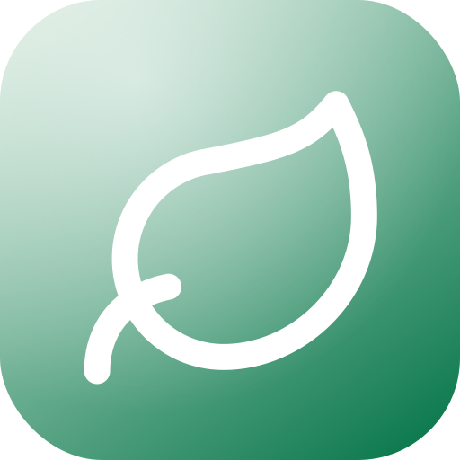

<!DOCTYPE html>
<html lang="it">
<head>
<meta charset="UTF-8">
<meta name="viewport" content="width=device-width, initial-scale=1.0, viewport-fit=cover, maximum-scale=1.0, user-scalable=no, interactive-widget=resizes-content">
<meta name="theme-color" content="#0e7a50">
<title>Cresco — l'amico bravo di finanza</title>
<meta name="description" content="L'app che ti porta da «voglio investire ma non so nulla» al tuo primo investimento. Senza giudizio, senza gergo.">
<link rel="icon" type="image/svg+xml" href="data:image/svg+xml,<svg xmlns='http://www.w3.org/2000/svg' viewBox='0 0 100 100'><defs><linearGradient id='bg' x1='.15' y1='0' x2='.85' y2='1'><stop offset='0' stop-color='%23cce4d6'/><stop offset='1' stop-color='%230e7a50'/></linearGradient></defs><rect width='100' height='100' rx='23' fill='url(%23bg)'/><g transform='translate(15,16.5) scale(3.05)' fill='none' stroke='white' stroke-width='2.1' stroke-linecap='round' stroke-linejoin='round'><path d='M11 20A7 7 0 0 1 9.8 6.1C15.5 5 17 4.48 19 2c1 2 2 4.18 2 8 0 5.5-4.78 10-10 10Z'/><path d='M2 21c0-3 1.85-5.36 5.08-6'/></g></svg>">
<meta name="apple-mobile-web-app-capable" content="yes">
<meta name="apple-mobile-web-app-status-bar-style" content="black-translucent">
<meta name="apple-mobile-web-app-title" content="Cresco">
<link rel="apple-touch-icon" sizes="512x512" href="apple-touch-icon.png">
<link rel="manifest" href="manifest.json">
<link rel="preconnect" href="https://fonts.googleapis.com">
<link rel="preconnect" href="https://fonts.gstatic.com" crossorigin>
<link href="https://fonts.googleapis.com/css2?family=Fraunces:opsz,wght@9..144,500;9..144,600;9..144,700&family=Inter:wght@400;500;600;700&display=swap" rel="stylesheet">
<style>
  *,*::before,*::after{box-sizing:border-box;margin:0;padding:0;-webkit-tap-highlight-color:transparent}
  :root{
    --bg:#f5f4ef;
    --surface:#ffffff;
    --surface-2:#faf9f5;
    --ink:#16241c;
    --muted:#6c7a70;
    --line:rgba(22,36,28,.09);
    --green:#0e7a50;
    --green-soft:#e4f2ea;
    --green-2:#16a06a;
    --orange:#f08a3c;
    --orange-soft:#fdeede;
    --gold:#e0a93c;
    --danger:#d8543f;
    --radius:20px;
    --radius-sm:13px;
    --sans:'Inter',system-ui,-apple-system,sans-serif;
    --serif:'Fraunces',Georgia,serif;
    --shadow:0 6px 24px rgba(22,36,28,.07);
    --shadow-lg:0 14px 44px rgba(22,36,28,.14);
    --nav-h:88px;
  }
  html,body{height:100%}
  body{
    font-family:var(--sans);background:var(--bg);color:var(--ink);
    font-size:15px;line-height:1.55;-webkit-font-smoothing:antialiased;
    overscroll-behavior-y:none;
  }
  #app{max-width:480px;margin:0 auto;min-height:100%;position:relative;background:var(--bg);
    box-shadow:0 0 60px rgba(0,0,0,.05)}
  .serif{font-family:var(--serif)}
  button{font-family:inherit;cursor:pointer;border:none;background:none;color:inherit}
  .btn{
    display:inline-flex;align-items:center;justify-content:center;gap:8px;
    background:var(--green);color:#fff;font-weight:600;font-size:15.5px;
    padding:15px 22px;border-radius:14px;width:100%;transition:transform .12s ease,box-shadow .2s;
    box-shadow:0 6px 18px rgba(14,122,80,.28);
  }
  .btn:active{transform:scale(.975)}
  .btn.secondary{background:var(--green-soft);color:var(--green);box-shadow:none}
  .btn.ghost{background:transparent;color:var(--muted);box-shadow:none;font-weight:500}
  .btn.orange{background:var(--orange);box-shadow:0 6px 18px rgba(240,138,60,.3)}
  .btn:disabled{opacity:.4;pointer-events:none}
  .chip{display:inline-flex;align-items:center;gap:6px;padding:6px 12px;border-radius:999px;
    font-size:12.5px;font-weight:600;background:var(--green-soft);color:var(--green)}
  .chip.orange{background:var(--orange-soft);color:#c4661f}
  .chip.gray{background:rgba(22,36,28,.06);color:var(--muted)}

  /* ---------- VIEW SYSTEM ---------- */
  .view{display:none;animation:fade .35s ease}
  .view.active{display:block}
  @keyframes fade{from{opacity:0;transform:translateY(6px)}to{opacity:1;transform:none}}
  .pad{padding:20px 18px}
  .scroll{padding-bottom:calc(var(--nav-h) + 26px);min-height:100vh;min-height:100dvh}

  /* ---------- HEADER ---------- */
  .topbar{position:sticky;top:0;z-index:20;background:rgba(245,244,239,.82);
    backdrop-filter:blur(14px);-webkit-backdrop-filter:blur(14px);
    padding:calc(env(safe-area-inset-top) + 14px) 18px 12px;display:flex;align-items:center;justify-content:space-between;
    border-bottom:1px solid var(--line)}
  .brand{display:flex;align-items:center;gap:9px;font-family:var(--serif);font-weight:700;font-size:20px}
  .logo{width:30px;height:30px;border-radius:9px;overflow:hidden;
    flex-shrink:0;box-shadow:0 3px 10px rgba(14,122,80,.28)}
  .logo img{width:100%;height:100%;display:block}

  /* ---------- CARDS ---------- */
  .card{background:var(--surface);border:1px solid var(--line);border-radius:var(--radius);
    padding:18px;box-shadow:var(--shadow)}
  .card+.card{margin-top:14px}
  .label{font-size:11.5px;font-weight:700;letter-spacing:.08em;text-transform:uppercase;color:var(--muted)}

  /* ---------- ONBOARDING ---------- */
  .hero{min-height:100vh;min-height:100dvh;display:flex;flex-direction:column;padding:calc(env(safe-area-inset-top) + 30px) 24px calc(28px + env(safe-area-inset-bottom));
    background:
      radial-gradient(120% 60% at 80% -5%,rgba(22,160,106,.16),transparent 60%),
      radial-gradient(100% 50% at 0% 5%,rgba(240,138,60,.12),transparent 55%),
      var(--bg);
  }
  .hero-top{flex:1;display:flex;flex-direction:column;justify-content:center}
  .hero h1{font-family:var(--serif);font-size:38px;line-height:1.08;font-weight:600;letter-spacing:-.01em;margin:22px 0 14px}
  .hero h1 em{font-style:italic;color:var(--green)}
  .hero p.lead{font-size:16.5px;color:var(--muted);max-width:330px}
  .badge-row{display:flex;gap:8px;flex-wrap:wrap;margin-top:22px}
  .step-dots{display:flex;gap:6px;justify-content:center;margin-bottom:18px}
  .step-dots i{width:7px;height:7px;border-radius:50%;background:var(--line)}
  .step-dots i.on{background:var(--green);width:22px;border-radius:4px}

  /* ---------- QUIZ ---------- */
  .q-wrap{min-height:100vh;min-height:100dvh;display:flex;flex-direction:column;padding:calc(env(safe-area-inset-top) + 18px) 22px calc(24px + env(safe-area-inset-bottom))}
  .q-head{padding-top:4px}
  .q-progress{height:6px;background:var(--line);border-radius:99px;overflow:hidden;margin:14px 0 26px}
  .q-progress span{display:block;height:100%;background:linear-gradient(90deg,#16a06a,#0e7a50);
    border-radius:99px;transition:width .4s cubic-bezier(.4,0,.2,1)}
  .q-body{flex:1}
  .q-title{font-family:var(--serif);font-size:25px;font-weight:600;line-height:1.18;margin-bottom:6px}
  .q-sub{color:var(--muted);font-size:14px;margin-bottom:22px}
  .opt{display:flex;align-items:center;gap:13px;width:100%;text-align:left;background:var(--surface);
    border:1.5px solid var(--line);border-radius:var(--radius-sm);padding:15px 16px;margin-bottom:11px;
    transition:border-color .25s ease,background .25s ease,transform .22s cubic-bezier(.34,1.56,.64,1),box-shadow .25s ease}
  .opt:active{transform:scale(.975)}
  .opt.sel{border-color:var(--green);background:var(--green-soft);box-shadow:0 4px 14px rgba(14,122,80,.14)}
  .opt .emoji{font-size:22px;width:30px;text-align:center;flex-shrink:0}
  .opt .ot{font-weight:600;font-size:15px}
  .opt .od{font-size:12.5px;color:var(--muted);margin-top:1px}
  .opt.sel .check{opacity:1;transform:scale(1)}
  .opt .check{margin-left:auto;opacity:0;transform:scale(.6);transition:.15s;color:var(--green);flex-shrink:0}

  /* ---------- HOME ---------- */
  .greet{font-family:var(--serif);font-size:26px;font-weight:600;line-height:1.15}
  .greet .sub{font-family:var(--sans);font-size:14px;color:var(--muted);font-weight:400;margin-top:3px}
  .level-card{background:linear-gradient(140deg,#0e7a50,#0b6543);color:#fff;border-radius:var(--radius);
    padding:20px;position:relative;overflow:hidden;box-shadow:var(--shadow-lg)}
  .level-card::after{content:"";position:absolute;right:-30px;top:-30px;width:140px;height:140px;
    border-radius:50%;background:rgba(255,255,255,.07)}
  .level-card .label{color:rgba(255,255,255,.7)}
  .level-card h3{font-family:var(--serif);font-size:21px;font-weight:600;margin:8px 0 4px;position:relative}
  .level-card p{font-size:13.5px;color:rgba(255,255,255,.82);position:relative}
  .progress-ring{display:flex;align-items:center;gap:14px;margin-top:16px;position:relative}
  .bar{flex:1;height:8px;background:rgba(255,255,255,.22);border-radius:99px;overflow:hidden}
  .bar span{display:block;height:100%;background:#fff;border-radius:99px;transition:width .6s}
  .pct{font-weight:700;font-size:14px}
  .next-step{display:flex;align-items:center;gap:14px;cursor:pointer}
  .ns-icon{width:46px;height:46px;border-radius:13px;background:var(--green-soft);color:var(--green);
    display:flex;align-items:center;justify-content:center;flex-shrink:0}
  .ns-icon.orange{background:var(--orange-soft);color:#c4661f}
  .row-stats{display:flex;gap:12px;margin-top:14px}
  .stat{flex:1;background:var(--surface);border:1px solid var(--line);border-radius:var(--radius-sm);
    padding:14px;text-align:center;box-shadow:var(--shadow)}
  .stat b{display:block;font-family:var(--serif);font-size:24px;font-weight:600;color:var(--green)}
  .stat small{font-size:11.5px;color:var(--muted);font-weight:500}
  .tip{display:flex;gap:12px;align-items:flex-start;background:var(--orange-soft);
    border-radius:var(--radius-sm);padding:14px 15px;border:1px solid rgba(240,138,60,.22)}
  .tip .ic{flex-shrink:0;margin-top:1px}

  /* ---------- ROADMAP ---------- */
  .phase{margin-bottom:8px}
  .phase-head{display:flex;align-items:center;gap:12px;padding:6px 2px 12px}
  .phase-num{width:34px;height:34px;border-radius:11px;display:flex;align-items:center;justify-content:center;
    font-weight:700;font-size:14px;flex-shrink:0;border:1.5px solid var(--line);background:var(--surface)}
  .phase.done .phase-num{background:var(--green);color:#fff;border-color:var(--green)}
  .phase.active .phase-num{background:var(--green-soft);color:var(--green);border-color:var(--green)}
  .phase-title{font-family:var(--serif);font-size:18px;font-weight:600}
  .phase-title small{display:block;font-family:var(--sans);font-size:12.5px;color:var(--muted);font-weight:400}
  .steps{position:relative;margin-left:16px;padding-left:24px;border-left:2px solid var(--line)}
  .phase.done .steps,.phase.active .steps{border-color:var(--green-soft)}
  .step-item{position:relative;padding:13px 15px;margin-bottom:11px;background:var(--surface);
    border:1px solid var(--line);border-radius:var(--radius-sm);display:flex;align-items:center;gap:12px;
    box-shadow:var(--shadow);transition:.15s}
  .step-item:active{transform:scale(.99)}
  .step-item::before{content:"";position:absolute;left:-31px;top:50%;width:13px;height:13px;border-radius:50%;
    background:var(--surface);border:2px solid var(--line);transform:translateY(-50%)}
  .step-item.done::before{background:var(--green);border-color:var(--green)}
  .step-item.locked{opacity:.55}
  .step-cb{width:24px;height:24px;border-radius:8px;border:2px solid var(--line);flex-shrink:0;
    display:flex;align-items:center;justify-content:center;transition:.15s}
  .step-item.done .step-cb{background:var(--green);border-color:var(--green)}
  .step-item.done .step-cb svg{opacity:1}
  .step-cb svg{opacity:0;transition:.15s}
  .step-tx{flex:1}
  .step-tx b{font-weight:600;font-size:14.5px;display:block}
  .step-item.done .step-tx b{text-decoration:line-through;color:var(--muted);text-decoration-color:rgba(108,122,112,.5)}
  .step-tx small{font-size:12px;color:var(--muted)}
  .step-go{color:var(--green);flex-shrink:0}
  .lock-ic{color:var(--muted);flex-shrink:0}

  /* ---------- COACH ---------- */
  .coach-view{display:flex;flex-direction:column;height:100dvh;overflow:hidden}
  body.typing .nav{transform:translateX(-50%) translateY(calc(130% + env(safe-area-inset-bottom)))}
  body.typing .coach-view{height:100dvh}
  .chat-scroll{flex:1;overflow-y:auto;-webkit-overflow-scrolling:touch;padding:16px 16px calc(var(--nav-h) + 8px);display:flex;flex-direction:column;gap:12px}
  body.typing .chat-scroll{padding-bottom:8px}
  .msg{max-width:84%;padding:12px 15px;border-radius:18px;font-size:14.5px;line-height:1.5;animation:pop .25s ease}
  @keyframes pop{from{opacity:0;transform:translateY(8px) scale(.98)}to{opacity:1;transform:none}}
  .msg.bot{background:var(--surface);border:1px solid var(--line);align-self:flex-start;border-bottom-left-radius:6px;
    box-shadow:var(--shadow)}
  .msg.me{background:var(--green);color:#fff;align-self:flex-end;border-bottom-right-radius:6px}
  .msg.bot b{color:var(--green);font-weight:700}
  .msg.bot strong{font-weight:700}
  .msg-coach-head{display:flex;align-items:center;gap:8px;margin-bottom:7px;font-size:12px;color:var(--muted);font-weight:600}
  .msg-av{width:22px;height:22px;border-radius:7px;overflow:hidden;flex-shrink:0}
  .typing{display:flex;gap:4px;padding:14px 16px}
  .typing i{width:7px;height:7px;border-radius:50%;background:var(--muted);opacity:.5;animation:blink 1.2s infinite}
  .typing i:nth-child(2){animation-delay:.2s}.typing i:nth-child(3){animation-delay:.4s}
  @keyframes blink{0%,60%,100%{opacity:.3;transform:translateY(0)}30%{opacity:1;transform:translateY(-3px)}}
  .suggest{display:flex;gap:8px;overflow-x:auto;padding:8px 16px 10px;scrollbar-width:none}
  .suggest::-webkit-scrollbar{display:none}
  .suggest button{white-space:nowrap;background:var(--surface);border:1px solid var(--line);border-radius:99px;
    padding:9px 14px;font-size:13px;font-weight:500;color:var(--ink);box-shadow:var(--shadow);flex-shrink:0}
  .suggest button:active{background:var(--green-soft)}
  .composer{display:flex;gap:9px;padding:10px 14px 12px;
    border-top:1px solid var(--line);background:var(--surface);align-items:flex-end}
  body.typing .composer{padding-bottom:calc(12px + env(safe-area-inset-bottom))}
  .composer textarea{flex:1;resize:none;border:1.5px solid var(--line);border-radius:18px;padding:11px 15px;
    font-family:inherit;font-size:15px;max-height:110px;background:var(--surface-2);line-height:1.4}
  .composer textarea:focus{outline:none;border-color:var(--green)}
  .send-btn{width:44px;height:44px;border-radius:50%;background:var(--green);color:#fff;flex-shrink:0;
    display:flex;align-items:center;justify-content:center;box-shadow:0 4px 12px rgba(14,122,80,.3)}
  .send-btn:disabled{opacity:.4}

  /* ---------- ACTION FLOW ---------- */
  .sheet-overlay{position:fixed;inset:0;background:rgba(22,36,28,.45);z-index:60;opacity:0;pointer-events:none;
    transition:opacity .3s;backdrop-filter:blur(2px)}
  .sheet-overlay.open{opacity:1;pointer-events:auto}
  .sheet{position:fixed;left:50%;transform:translateX(-50%) translateY(100%);bottom:0;width:100%;max-width:480px;
    background:var(--bg);z-index:61;border-radius:24px 24px 0 0;transition:transform .34s cubic-bezier(.32,.72,0,1);
    max-height:92vh;display:flex;flex-direction:column}
  .sheet.open{transform:translateX(-50%) translateY(0)}
  .sheet-grab{width:38px;height:5px;border-radius:99px;background:var(--line);margin:10px auto 4px}
  .sheet-head{padding:6px 20px 14px;display:flex;align-items:center;justify-content:space-between;border-bottom:1px solid var(--line)}
  .sheet-head h3{font-family:var(--serif);font-size:18px;font-weight:600}
  .sheet-x{width:32px;height:32px;border-radius:50%;background:rgba(22,36,28,.06);display:flex;align-items:center;justify-content:center}
  .sheet-body{overflow-y:auto;padding:20px;flex:1}
  .aflow-step{display:flex;gap:14px;margin-bottom:4px}
  .aflow-num{flex-shrink:0;width:30px;height:30px;border-radius:50%;background:var(--green-soft);color:var(--green);
    font-weight:700;font-size:13px;display:flex;align-items:center;justify-content:center;z-index:1}
  .aflow-line{position:relative}
  .aflow-line::before{content:"";position:absolute;left:15px;top:30px;bottom:-14px;width:2px;background:var(--line)}
  .aflow-step:last-child .aflow-line::before{display:none}
  .aflow-tx{padding-bottom:22px}
  .aflow-tx b{font-weight:600;font-size:15px}
  .aflow-tx p{font-size:13.5px;color:var(--muted);margin-top:3px}

  /* ---------- LESSON SHEET ---------- */
  .lesson-meta{display:flex;align-items:center;gap:10px;margin-bottom:16px}
  .lesson-emoji{font-size:32px}
  .lesson-dur{font-size:12px;color:var(--muted);font-weight:600;background:var(--surface-2);padding:4px 10px;border-radius:99px}
  .lesson-body{font-size:15px;line-height:1.72;color:var(--ink)}
  .lesson-body strong{font-weight:700}
  .lesson-body ul{padding-left:4px;list-style:none}
  .lesson-body ul li::before{content:"• ";color:var(--green);font-weight:700}
  .lesson-body ul li{margin-bottom:6px}
  .ex-box{background:var(--green-soft);border:1.5px solid rgba(14,122,80,.2);border-radius:13px;
    padding:14px 16px;margin:18px 0;font-size:13.5px;line-height:1.6}
  .ex-box .ex-label{font-size:11px;font-weight:700;letter-spacing:.08em;text-transform:uppercase;
    color:var(--green);margin-bottom:6px}
  .quiz-section{margin-top:24px;border-top:1px solid var(--line);padding-top:20px}
  .quiz-label{font-size:11px;font-weight:700;letter-spacing:.08em;text-transform:uppercase;color:var(--muted);margin-bottom:14px}
  .quiz-q{font-size:15px;font-weight:600;line-height:1.4;margin-bottom:12px}
  .quiz-opt{display:flex;align-items:center;gap:10px;width:100%;text-align:left;
    background:var(--surface);border:1.5px solid var(--line);border-radius:11px;
    padding:12px 14px;margin-bottom:8px;font-size:14px;transition:border-color .2s,background .2s}
  .quiz-opt.correct{border-color:var(--green);background:var(--green-soft)}
  .quiz-opt.wrong{border-color:#e05252;background:#fdf0f0}
  .quiz-opt:disabled{cursor:default}
  .quiz-explain{font-size:13px;color:var(--muted);line-height:1.55;margin:4px 0 14px;
    padding:10px 12px;background:var(--surface-2);border-radius:9px;display:none}
  .quiz-explain.show{display:block}

  /* ---------- BOTTOM NAV ---------- */
  .nav{position:fixed;bottom:calc(env(safe-area-inset-bottom) + 18px);left:50%;
    transform:translateX(-50%);
    width:min(320px,calc(100% - 36px));height:62px;
    background:rgba(255,255,255,0.26);
    backdrop-filter:blur(28px) saturate(180%);-webkit-backdrop-filter:blur(28px) saturate(180%);
    border-radius:100px;
    border:1px solid rgba(255,255,255,0.50);
    box-shadow:0 8px 32px rgba(22,36,28,.13),0 2px 8px rgba(22,36,28,.07),inset 0 1px 0 rgba(255,255,255,.65);
    display:flex;align-items:center;padding:0 6px;z-index:30;transition:transform .25s ease}
  .nav button{flex:1;display:flex;flex-direction:column;align-items:center;justify-content:center;gap:3px;
    color:var(--muted);font-size:10px;font-weight:600;position:relative;height:100%;border-radius:100px;transition:color .15s}
  .nav button.on{color:var(--green)}
  .nav button.on::before{content:'';position:absolute;inset:7px 3px;background:rgba(14,122,80,.10);border-radius:100px}
  .nav button svg{width:22px;height:22px;position:relative}
  .nav button span:not(.dot){position:relative}
  .nav .dot{position:absolute;top:7px;right:calc(50% - 13px);width:7px;height:7px;background:var(--orange);
    border-radius:50%;display:none;z-index:1}
  .nav button.has-dot .dot{display:block}

  h1,h2,h3,h4,h5,h6{text-wrap:balance}
  p,.lead,.disc,.card p,.label+p,.tip p,.q-label,.q-sub{text-wrap:pretty}
  .disc{font-size:11px;color:var(--muted);text-align:center;line-height:1.5;padding:0 8px}
  .divider{height:1px;background:var(--line);margin:18px 0}
  .toast{position:fixed;bottom:calc(var(--nav-h) + 18px);left:50%;transform:translateX(-50%) translateY(20px);
    background:var(--ink);color:#fff;padding:12px 18px;border-radius:13px;font-size:13.5px;font-weight:500;z-index:80;
    opacity:0;transition:.3s;max-width:88%;text-align:center;box-shadow:var(--shadow-lg)}
  .toast.show{opacity:1;transform:translateX(-50%) translateY(0)}
  .field{margin-bottom:14px}
  .field label{display:block;font-size:13px;font-weight:600;margin-bottom:7px}
  .field input,.field select{width:100%;padding:13px 15px;border:1.5px solid var(--line);border-radius:13px;
    font-family:inherit;font-size:15px;background:var(--surface)}
  .field input:focus,.field select:focus{outline:none;border-color:var(--green)}
  .seg{display:flex;background:rgba(22,36,28,.05);border-radius:13px;padding:4px;gap:4px}
  .seg button{flex:1;padding:10px;border-radius:10px;font-weight:600;font-size:13px;color:var(--muted)}
  .seg button.on{background:var(--surface);color:var(--green);box-shadow:var(--shadow)}
</style>
</head>
<body>
<div id="app"></div>
<div class="toast" id="toast"></div>

<script>
/* ============================================================
   CRESCO — l'amico bravo di finanza
   Single-file prototype · vanilla JS · localStorage
   ============================================================ */

const App = document.getElementById('app');
const LS = 'cresco_v1';

/* ---------- STATE ---------- */
const defaultState = {
  onboarded:false, name:'', tab:'home',
  profile:{ age:'', income:'', save:'', emergency:'', goal:'', experience:'' },
  steps:{}, // id -> true
  chat:[], chatSeeded:false,
  coachFlow:{flow:null,step:'',slots:{}},
  diagnosisScore:0
};
let S = load();
function load(){ try{ return Object.assign(JSON.parse(JSON.stringify(defaultState)), JSON.parse(localStorage.getItem(LS))||{}) }catch(e){ return JSON.parse(JSON.stringify(defaultState)) } }
function save(){ localStorage.setItem(LS, JSON.stringify(S)) }

/* ---------- ICONS ---------- */
const I = {
  leaf:'',
  face:'<svg viewBox="0 0 24 24" xmlns="http://www.w3.org/2000/svg" width="100%" height="100%"><defs><linearGradient id="faceg" x1="0" y1="0" x2="1" y2="1"><stop offset="0" stop-color="#16a06a"/><stop offset="1" stop-color="#0e7a50"/></linearGradient></defs><rect width="24" height="24" fill="url(#faceg)"/><path d="M12 8L12 3" stroke="#5de0a4" stroke-width="1.3" stroke-linecap="round"/><path d="M12 7Q8.5 5.5 9 2.5Q12.5 3.5 12 7Z" fill="#7dedc0"/><path d="M12 5.5Q15.5 3.5 15 0.5Q11.5 1.8 12 5.5Z" fill="#5de0a4"/><circle cx="12" cy="16" r="8" fill="#fdf9f0"/><circle cx="8.5" cy="18" r="1.8" fill="#f08a3c" opacity=".22"/><circle cx="15.5" cy="18" r="1.8" fill="#f08a3c" opacity=".22"/><circle cx="9.8" cy="14.5" r="1.4" fill="#16241c"/><circle cx="14.2" cy="14.5" r="1.4" fill="#16241c"/><circle cx="10.3" cy="14" r=".5" fill="white"/><circle cx="14.7" cy="14" r=".5" fill="white"/><path d="M9.5 18Q12 20.5 14.5 18" fill="none" stroke="#16241c" stroke-width=".95" stroke-linecap="round"/></svg>',
  check:'<svg width="14" height="14" viewBox="0 0 24 24" fill="none" stroke="#fff" stroke-width="3.2" stroke-linecap="round" stroke-linejoin="round"><polyline points="20 6 9 17 4 12"/></svg>',
  checkS:'<svg width="20" height="20" viewBox="0 0 24 24" fill="none" stroke="currentColor" stroke-width="2.4" stroke-linecap="round" stroke-linejoin="round"><polyline points="20 6 9 17 4 12"/></svg>',
  arrow:'<svg width="20" height="20" viewBox="0 0 24 24" fill="none" stroke="currentColor" stroke-width="2.2" stroke-linecap="round" stroke-linejoin="round"><path d="M5 12h14M13 6l6 6-6 6"/></svg>',
  lock:'<svg width="18" height="18" viewBox="0 0 24 24" fill="none" stroke="currentColor" stroke-width="2" stroke-linecap="round" stroke-linejoin="round"><rect x="3" y="11" width="18" height="11" rx="2"/><path d="M7 11V7a5 5 0 0 1 10 0v4"/></svg>',
  home:'<svg viewBox="0 0 24 24" fill="none" stroke="currentColor" stroke-width="2" stroke-linecap="round" stroke-linejoin="round"><path d="M3 9.5 12 3l9 6.5V20a1 1 0 0 1-1 1h-5v-6H9v6H4a1 1 0 0 1-1-1Z"/></svg>',
  map:'<svg viewBox="0 0 24 24" fill="none" stroke="currentColor" stroke-width="2" stroke-linecap="round" stroke-linejoin="round"><circle cx="5" cy="19" r="2"/><path d="M7 19 C11 19 11 5 17 5"/><path d="M17 1a4 4 0 0 0-4 4c0 2.8 4 6.5 4 6.5s4-3.7 4-6.5a4 4 0 0 0-4-4Z"/><circle cx="17" cy="5" r="1.5" fill="currentColor" stroke="none"/></svg>',
  chat:'<svg viewBox="0 0 24 24" fill="none" stroke="currentColor" stroke-width="2" stroke-linecap="round" stroke-linejoin="round"><path d="M21 11.5a8.38 8.38 0 0 1-8.5 8.5 8.5 8.5 0 0 1-3.8-.9L3 21l1.9-5.7a8.5 8.5 0 0 1-.9-3.8A8.38 8.38 0 0 1 12.5 3 8.38 8.38 0 0 1 21 11.5Z"/></svg>',
  user:'<svg viewBox="0 0 24 24" fill="none" stroke="currentColor" stroke-width="2" stroke-linecap="round" stroke-linejoin="round"><circle cx="12" cy="8" r="4"/><path d="M4 21v-1a7 7 0 0 1 14 0v1"/></svg>',
  send:'<svg width="20" height="20" viewBox="0 0 24 24" fill="none" stroke="#fff" stroke-width="2.2" stroke-linecap="round" stroke-linejoin="round"><path d="M22 2 11 13M22 2l-7 20-4-9-9-4 20-7Z"/></svg>',
  spark:'<svg width="18" height="18" viewBox="0 0 24 24" fill="none" stroke="#c4661f" stroke-width="2" stroke-linecap="round" stroke-linejoin="round"><path d="M12 3v3M12 18v3M3 12h3M18 12h3M5.6 5.6l2.1 2.1M16.3 16.3l2.1 2.1M5.6 18.4l2.1-2.1M16.3 7.7l2.1-2.1"/></svg>',
  x:'<svg width="16" height="16" viewBox="0 0 24 24" fill="none" stroke="currentColor" stroke-width="2.4" stroke-linecap="round"><path d="M18 6 6 18M6 6l12 12"/></svg>'
};

/* ============================================================
   CONTENT MODEL — phases & steps
   ============================================================ */
const PHASES = [
  { id:'p1', title:'Le fondamenta', sub:'Mettere in ordine la base',
    steps:[
      {id:'s_conto', t:'Aprire un conto corrente', d:'Il tuo quartier generale dei soldi', action:'conto'},
      {id:'s_budget', t:'Capire dove vanno i soldi', d:'La regola semplice 50/30/20', action:'budget'},
      {id:'s_emergency', t:'Creare il fondo di emergenza', d:'3-6 mesi di spese da parte', action:'emergency'},
    ]},
  { id:'p2', title:'Il primo investimento', sub:'Da risparmiatore a investitore',
    steps:[
      {id:'s_etf', t:'Capire cos’è un ETF', d:'Il mattone di chi parte da zero', action:'etf'},
      {id:'s_platform', t:'Scegliere e aprire una piattaforma', d:'Dove comprerai i tuoi ETF', action:'platform'},
      {id:'s_first', t:'Fare il primo investimento', d:'Anche solo con 50€', action:'first'},
      {id:'s_pac', t:'Impostare un PAC automatico', d:'L’abitudine che fa il 90% del lavoro', action:'pac'},
    ]},
  { id:'p3', title:'Crescere nel tempo', sub:'Trasformarlo in abitudine',
    steps:[
      {id:'s_diversify', t:'Diversificare con criterio', d:'Non mettere tutto in un posto', action:'diversify'},
      {id:'s_taxes', t:'Capire tasse e dichiarazione', d:'Quanto e quando paghi', action:'taxes'},
      {id:'s_review', t:'Rivedere il piano ogni 6 mesi', d:'Aggiustare, non stravolgere', action:'review'},
    ]},
];

const ALL_STEPS = PHASES.flatMap(p=>p.steps);
function stepDone(id){ return !!S.steps[id] }
function totalDone(){ return ALL_STEPS.filter(s=>stepDone(s.id)).length }
function phaseState(p){
  const done = p.steps.every(s=>stepDone(s.id));
  if(done) return 'done';
  // active if previous phases done or it's the first not-fully-done
  const idx = PHASES.indexOf(p);
  const prevDone = idx===0 || PHASES.slice(0,idx).every(pp=>pp.steps.every(s=>stepDone(s.id)));
  return prevDone ? 'active' : 'locked';
}
function nextStep(){ return ALL_STEPS.find(s=>!stepDone(s.id)) || null }
function currentPhase(){ return PHASES.find(p=>phaseState(p)==='active') || PHASES[PHASES.length-1] }

/* ============================================================
   INVESTITORE PRO — unlocks after the base course is complete
   ============================================================ */
function exBox(t){ return `<div style="background:var(--orange-soft);border:1px solid rgba(240,138,60,.2);border-radius:11px;padding:12px 14px;margin-top:12px;font-size:13.5px;line-height:1.55;color:#7a5a36"><b style="color:#c4661f">Esempio pratico</b><br>${t}</div>`; }
const PRO = [
  { id:'pro_risk', t:'Capire il rischio davvero', d:'Volatilità, drawdown e perché contano',
    body:`Il rischio non è "perdere tutto": è la <strong>volatilità</strong>, cioè quanto oscilla il valore nel tempo. 📉<br><br>Il <strong>drawdown</strong> è quanto scende dal punto più alto. Spaventa, ma è temporaneo se non vendi.<br><br>Rischio e rendimento vanno a braccetto: non esiste rendimento senza un po' di rischio. L'obiettivo non è azzerarlo, è prendere quello <strong>giusto per te</strong>.<br><br>Il rischio diventa <strong>perdita vera</strong> solo in due casi: se vendi quando è giù, o se ti servono i soldi proprio in quel momento.`+exBox(`Nel marzo 2020 (Covid) i mercati mondiali persero circa <strong>-34% in un mese</strong>… e recuperarono tutto entro l'anno. Chi vendette nel panico perse davvero. Chi restò fermo, no.`) },
  { id:'pro_alloc', t:'Asset allocation: dividere la torta', d:'La decisione che conta più di tutte',
    body:`È <strong>LA</strong> decisione più importante — più della scelta del singolo ETF: come dividi tra <strong>azioni</strong> (crescita) e <strong>obbligazioni</strong> (stabilità). ⚖️<br><br>Regola classica dell'età: la % in obbligazioni ≈ la tua età. A 30 anni → circa 70% azioni / 30% obbligazioni. Più sei giovane, più azioni.<br><br>Tre profili di esempio:<br>• <strong>Prudente</strong>: 40% azioni / 50% obblig. / 10% oro<br>• <strong>Bilanciato</strong>: 60 / 35 / 5<br>• <strong>Aggressivo</strong>: 90 / 10 / 0`+exBox(`Con 200€/mese, un 30enne "bilanciato" mette ~120€ in ETF azionario mondiale, ~70€ in ETF obbligazionario, ~10€ in oro — e mantiene queste proporzioni nel tempo.`) },
  { id:'pro_classi', t:'Le classi di investimento', d:'La mappa di tutto il mondo finanziario',
    body:`Una mappa veloce — cosa sono e quando hanno senso: 🗺️<br><br>• <strong>Azioni</strong>: pezzi di un'azienda. Crescita alta, oscillazioni alte.<br>• <strong>Obbligazioni</strong>: prestiti che pagano interessi. Più stabili.<br>• <strong>ETF</strong>: cesti di tanti titoli insieme. Il modo più semplice per diversificare.<br>• <strong>Materie prime</strong> (oro, petrolio): proteggono dall'inflazione, non danno reddito.<br>• <strong>Crypto</strong>: altissimo rischio — piccola fetta o niente.<br>• <strong>Immobili</strong>: casa, oppure REIT (società immobiliari quotate) senza comprare mattoni.`+exBox(`Il portafoglio più intelligente per chi inizia è anche il più semplice: 1 ETF azionario mondiale + un po' di obbligazioni + il fondo di emergenza liquido. Tutto qui.`) },
  { id:'pro_etfpro', t:'Leggere un ETF come un pro', d:'TER, ISIN, replica, accumulo',
    body:`Saper leggere un ETF ti fa scegliere come un professionista. I numeri che contano: 🔎<br><br>• <strong>ISIN</strong>: il codice univoco. Se inizia per <strong>IE</strong> è domiciliato in Irlanda → più efficiente per noi.<br>• <strong>TER</strong>: il costo annuo. Sotto lo <strong>0,25%</strong> è ottimo.<br>• <strong>Replica fisica</strong> (compra davvero i titoli, preferibile) vs sintetica (usa derivati).<br>• <strong>Accumulo</strong> (reinveste i dividendi) vs distribuzione (te li paga).<br>• <strong>Dimensione (AUM)</strong>: più grande e vecchio = più solido.`+exBox(`Due ETF sullo stesso indice MSCI World: uno con TER 0,20% e uno con 0,50%. Su 10.000€ sono 20€ contro 50€ all'anno. A parità di indice, scegli il più economico, fisico e ad accumulo.`) },
  { id:'pro_psico', t:'Psicologia: gli errori che costano', d:'Il tuo peggior nemico sei tu',
    body:`Il tuo peggior nemico in finanza non è il mercato: sei tu. 🧠 I tre errori che costano di più:<br><br>• <strong>Panic selling</strong>: vendere quando crolla. Trasforma una perdita finta in vera. L'errore #1.<br>• <strong>FOMO</strong>: comprare l'asset "di moda" sul picco perché ne parlano tutti.<br>• <strong>Market timing</strong>: provare a indovinare il momento giusto. Quasi nessuno ci riesce, nemmeno i pro.`+exBox(`Chi è rimasto investito nell'S&P 500 ha reso in media circa il 10% l'anno. Chi ha provato a entrare e uscire, perdendo solo i <strong>10 giorni migliori</strong> in 20 anni, ha quasi dimezzato il risultato. Stare fermi paga.`)+`<br>La difesa migliore: <strong>PAC automatico</strong> + non guardare il conto ogni giorno.` },
  { id:'pro_tasse', t:'Tasse e ottimizzazione fiscale', d:'Minus, plus e zainetto fiscale',
    body:`Le tasse da investitore evoluto, senza mal di testa: 🧾<br><br>• <strong>26%</strong> sui guadagni (12,5% sui titoli di Stato), paghi solo quando vendi.<br>• <strong>Minus/plusvalenze</strong>: le perdite ("minus") si compensano con i guadagni entro 4 anni — è il tuo "zainetto fiscale".<br>• Dettaglio da pro: in Italia le minus degli <strong>ETF non compensano</strong> le plus di altri ETF (asimmetria fiscale). Compensano azioni, obbligazioni, certificati.<br>• <strong>Regime amministrato</strong> (la banca fa tutto) vs <strong>dichiarativo</strong> (tu nel 730).`+exBox(`Vendi con +1.000€ di guadagno → 260€ di tasse. Ma se avevi 1.000€ di minus in "zainetto" da una vendita passata in perdita, compensi e paghi <strong>0€</strong>.`) },
  { id:'pro_ribil', t:'Costruire e ribilanciare', d:'Vendere alto e comprare basso, in automatico',
    body:`Costruire il portafoglio è metà del lavoro. L'altra metà è <strong>ribilanciare</strong>. 🔧<br><br>Ribilanciare = riportare le percentuali al tuo obiettivo quando si sono spostate.<br><br>Quando: 1-2 volte l'anno, o quando ti scosti del 5-10% dal target.<br><br>Il bello: ti costringe a "vendere alto e comprare basso" in automatico, senza emozioni.`+exBox(`Target 60% azioni / 40% obbligazioni. Dopo un anno buono le azioni sono salite e ora sei 70/30. Ribilanci comprando più obbligazioni coi nuovi versamenti (eviti le tasse della vendita) finché torni a 60/40.`) },
  { id:'pro_oltre', t:'Oltre le basi', d:'Dividendi, immobili, regola del 72',
    body:`Sei arrivato in fondo. Uno sguardo a ciò che c'è oltre — quando sarai pronto: 🎓<br><br>• <strong>Dividend investing</strong>: vivere delle cedole. Richiede capitali importanti.<br>• <strong>Immobili senza comprare casa</strong>: i REIT e gli ETF immobiliari.<br>• <strong>Obbligazioni in dettaglio</strong>: la "duration" e perché i bond scendono quando i tassi salgono.<br>• <strong>Regola del 72</strong>: 72 ÷ rendimento% = anni per raddoppiare. Al 6% → circa 12 anni.`+exBox(`Per incassare 1.000€/mese di dividendi a un rendimento del 4% servono circa <strong>300.000€</strong> investiti. Ecco perché prima si accumula (con gli ETF), e solo molto dopo si "vive di rendita".`)+`<br>Verità finale: la base semplice — <strong>ETF mondiale + PAC + costanza</strong> — batte oltre il 90% degli investitori "attivi". Non complicarti. 🌱` },
];
function cbHtml(on){ return `<div style="width:24px;height:24px;border-radius:8px;border:2px solid ${on?'var(--green)':'var(--line)'};background:${on?'var(--green)':'transparent'};flex-shrink:0;display:flex;align-items:center;justify-content:center">${on?I.check:''}</div>`; }
function proSectionHtml(){
  const baseDone = totalDone()===ALL_STEPS.length;
  const proDone = PRO.filter(l=>stepDone(l.id)).length;
  const head = `<div style="margin:28px 0 14px;display:flex;align-items:center;gap:11px">
      <div style="width:38px;height:38px;border-radius:12px;background:linear-gradient(135deg,#f0a93c,#e0832b);display:flex;align-items:center;justify-content:center;font-size:19px;box-shadow:0 4px 12px rgba(224,131,43,.3)">⭐</div>
      <div><div class="phase-title" style="font-size:19px">Investitore Pro</div><small style="display:block;color:var(--muted);font-size:12.5px">Tutto il mondo finanziario, con esempi concreti</small></div>
      ${baseDone?`<span class="chip orange" style="margin-left:auto">${proDone}/${PRO.length}</span>`:''}
    </div>`;
  if(!baseDone){
    const pct=Math.round(totalDone()/ALL_STEPS.length*100);
    return head + `<div class="card" style="text-align:center">
      <div style="font-size:30px">🔒</div>
      <b class="serif" style="font-size:17px;display:block;margin:6px 0">Si sblocca dopo il corso base</b>
      <p style="color:var(--muted);font-size:13.5px">Completa i ${ALL_STEPS.length} passi del percorso base e si apre il livello Pro: rischio, asset allocation, psicologia, tasse, ribilanciamento e altro — tutto con esempi pratici.</p>
      <div class="bar" style="background:var(--line);height:8px;margin-top:14px"><span style="width:${pct}%;display:block;height:100%;background:linear-gradient(90deg,#f0a93c,#e0832b);border-radius:99px"></span></div>
      <small style="color:var(--muted);display:block;margin-top:8px">${totalDone()}/${ALL_STEPS.length} passi per sbloccare</small>
    </div>`;
  }
  return head + PRO.map(l=>{
    const dn=stepDone(l.id);
    return `<div class="card" style="display:flex;align-items:center;gap:13px;padding:14px 15px;margin-bottom:10px${dn?';opacity:.72':''}" onclick="openLesson('${l.id}')">
      <span onclick="event.stopPropagation();toggleStep('${l.id}')">${cbHtml(dn)}</span>
      <div style="flex:1"><b style="font-size:14.5px;${dn?'text-decoration:line-through;color:var(--muted)':''}">${l.t}</b><br><small style="color:var(--muted);font-size:12px">${l.d}</small></div>
      <span style="color:var(--orange);flex-shrink:0">${I.arrow}</span>
    </div>`;
  }).join('');
}
function openLesson(id){
  const l = PRO.find(x=>x.id===id); if(!l) return;
  const done = stepDone(id);
  document.getElementById('sheetContent').innerHTML = `
    <div class="sheet-head"><h3>${l.t}</h3><button class="sheet-x" onclick="closeSheet()">${I.x}</button></div>
    <div class="sheet-body">
      <span class="chip orange">⭐ Investitore Pro</span>
      <div style="margin-top:14px;font-size:14.5px;line-height:1.65">${l.body}</div>
      <button class="btn ${done?'secondary':'orange'}" style="margin-top:18px" onclick="completeLesson('${id}')">${done?'✓ Lezione completata — tocca per annullare':'Ho completato questa lezione'}</button>
      <button class="btn ghost" style="margin-top:8px" onclick="closeSheet();go('coach')">Ho una domanda, chiedo al coach</button>
      <div style="height:12px"></div>
    </div>`;
  document.getElementById('sheet').classList.add('open');
  document.getElementById('sheetOv').classList.add('open');
}
function completeLesson(id){
  const was=stepDone(id); S.steps[id]=!was; save(); closeSheet();
  if(!was){ toast('Lezione completata! ⭐'); celebrate(); }
  render();
}

/* ============================================================
   ONBOARDING / QUIZ
   ============================================================ */
const QUIZ = [
  { key:'age', q:'Quanti anni hai?', s:'Serve per tarare i consigli sul tuo orizzonte di tempo.',
    opts:[ ['🌱','Meno di 25','Hai il tempo dalla tua parte','u25'],['🚀','25 – 34','L’età d’oro per iniziare','2534'],['🌳','35 – 49','Mai troppo tardi','3549'],['⛵','50 o più','Strategia un po’ diversa','o50'] ] },
  { key:'income', q:'Quanto guadagni circa al mese?', s:'Resta tutto sul tuo telefono. Nessuno lo vede.',
    opts:[ ['','Meno di 1.200€','','low'],['','1.200 – 1.800€','','mid'],['','1.800 – 2.800€','','high'],['','Oltre 2.800€ o variabile','','top'] ] },
  { key:'save', q:'Riesci a mettere da parte qualcosa?', s:'Onesto, non come vorresti che fosse.',
    opts:[ ['😅','Quasi mai, arrivo a fine mese','','none'],['🪙','Qualcosa, ma a caso','','some'],['💪','Sì, ogni mese un po’','','reg'],['🔥','Sì, una bella fetta','','lots'] ] },
  { key:'emergency', q:'Hai un fondo di emergenza?', s:'Soldi da parte per gli imprevisti, prima di investire.',
    opts:[ ['❌','No, zero cuscinetto','','no'],['🤏','Un po’, meno di 1 mese di spese','','little'],['✅','Sì, 1-3 mesi','','some'],['🛡️','Sì, 3-6 mesi o più','','full'] ] },
  { key:'goal', q:'Qual è il tuo obiettivo principale?', s:'Quello che ti spinge davvero.',
    opts:[ ['🏡','Comprare casa','un giorno','house'],['🏖️','Libertà e pensione','far crescere il futuro','freedom'],['🛟','Sicurezza','non avere ansia da soldi','safety'],['📈','Far fruttare i risparmi','che ora dormono sul conto','grow'] ] },
  { key:'experience', q:'Quanto ne sai di investimenti?', s:'Nessuna risposta sbagliata. Davvero.',
    opts:[ ['🐣','Parto da zero assoluto','Non so cosa sia un ETF','zero'],['📖','Ho letto qualcosa','Ma non ho mai iniziato','some'],['🧩','Ho già investito un po’','Voglio fare meglio','done'],['🎓','Me la cavo','Cerco rifinitura','pro'] ] },
];
let quizIdx = 0;

function computeScore(){
  // a soft "readiness" 0-100 used for messaging
  let s = 30;
  const p = S.profile;
  if(p.emergency==='full') s+=25; else if(p.emergency==='some') s+=15; else if(p.emergency==='little') s+=5;
  if(p.save==='lots') s+=20; else if(p.save==='reg') s+=14; else if(p.save==='some') s+=6;
  if(p.experience==='pro') s+=12; else if(p.experience==='done') s+=10; else if(p.experience==='some') s+=4;
  if(p.income==='top') s+=8; else if(p.income==='high') s+=6; else if(p.income==='mid') s+=3;
  return Math.min(100, s);
}

/* ============================================================
   COACH — knowledge base (rule-based, works offline)
   ============================================================ */
const KB = [
  { k:['etf','e.t.f','exchange traded','msci','world','indice','indici'], a:"Un <b>ETF</b> è come un cestino che contiene tante aziende tutte insieme. 🧺<br><br>Invece di comprare l’azione di <strong>una</strong> sola azienda (rischioso — se va male, perdi), con un ETF compri un pezzettino di <strong>centinaia o migliaia</strong> di aziende in un colpo solo.<br><br>Il più famoso per chi inizia è un ETF sul <strong>MSCI World</strong>: dentro ci sono ~1.400 grandi aziende di tutto il mondo (Apple, Nestlé, Toyota...). Compri \"un pezzo dell’economia mondiale\".<br><br>È il mattone perfetto per partire: semplice, diversificato, economico." },
  { k:['conto corrente','conto deposito','iban','postepay','banca dove'], a:"Il <b>conto corrente</b> è il tuo quartier generale dei soldi: ci arriva lo stipendio, da lì parti per tutto il resto.<br><br>Per uno che inizia, i conti online sono i più comodi e quasi gratis. Quello che conta:<br>• <strong>Canone basso o zero</strong><br>• <strong>IBAN italiano</strong> (per stipendio e bollette)<br>• Una bella <strong>app</strong> per vedere tutto al volo<br><br>La PostePay Evolution ha un IBAN ma non è un vero conto: per il lavoro e per costruire la tua vita finanziaria, meglio un conto corrente vero." },
  { k:['fondo di emergenza','emergenza','cuscinetto','imprevisti','risparmio di sicurezza'], a:"Il <b>fondo di emergenza</b> è la prima cosa, <strong>prima ancora di investire</strong>. 🛡️<br><br>Sono soldi da parte per gli imprevisti: l’auto che si rompe, un dente, un mese senza lavoro. Servono a non dover vendere i tuoi investimenti nel momento peggiore.<br><br><strong>Quanto?</strong> Da 3 a 6 mesi delle tue spese. Se spendi 1.200€ al mese, punta a 3.600€–7.200€.<br><br><strong>Dove?</strong> Su un conto deposito o un conto separato — liquidi, sicuri, NON investiti. Non devono crescere, devono <em>esserci</em>." },
  { k:['pac','piano di accumulo','versamento automatico','ogni mese','automatico'], a:"Un <b>PAC</b> (Piano di Accumulo del Capitale) è il segreto più sottovalutato. 🔁<br><br>In pratica: imposti un <strong>versamento automatico</strong> ogni mese (es. 100€) che compra sempre lo stesso ETF, da solo, senza che tu ci pensi.<br><br>Perché è geniale:<br>• <strong>Togli l’emotività</strong>: compri sia quando sale che quando scende<br>• <strong>Costruisci l’abitudine</strong> senza forza di volontà<br>• Sfrutti l’<strong>interesse composto</strong> nel tempo<br><br>Meglio 100€ al mese per 10 anni che 12.000€ \"quando sarò pronto\" (che non arriva mai)." },
  { k:['trade republic','traderepublic','quale piattaforma','quale app','directa','fineco','scalable','broker'], a:"La <b>piattaforma</b> è dove comprerai materialmente i tuoi ETF. È come scegliere il supermercato.<br><br>Per chi inizia in Italia, le più usate sono semplici e a basso costo. Quello che conta davvero:<br>• <strong>Costi bassi</strong> (commissioni e canone)<br>• <strong>PAC gratuito o quasi</strong><br>• App semplice e in italiano<br>• Regolamentata e seria<br><br>Un consiglio: scegline una e <strong>inizia</strong>. Il 90% del risultato viene dal cominciare, non dal trovare la \"perfetta\". Puoi sempre spostarti dopo.<br><br><em>Cresco non vende prodotti: ti spiega come scegliere e basta.</em>" },
  { k:['quanto investire','quanto metto','quanti soldi','minimo','iniziare con','50 euro','100 euro'], a:"La risposta che spiazza tutti: <b>puoi iniziare anche con 50€</b>. 🪙<br><br>Non serve essere ricchi. Serve <strong>iniziare</strong> e essere costante.<br><br>Una regola sana, dopo aver messo via il fondo di emergenza:<br>• Investi solo soldi che <strong>non ti servono per 5+ anni</strong><br>• Parti con una cifra che non ti toglie il sonno<br>• Meglio <strong>poco e ogni mese</strong> (PAC) che tanto una volta sola<br><br>L’importante all’inizio non è quanto guadagni, è prendere l’<strong>abitudine</strong>. I numeri crescono dopo, col tempo." },
  { k:['rischio','rischioso','perdere','perdo','crollo','crolla','scende'], a:"Domanda giusta. Investire <strong>ha</strong> dei rischi — chi dice il contrario sta mentendo. ⚠️<br><br>La verità onesta:<br>• Nel <strong>breve</strong> periodo i mercati salgono e scendono, anche parecchio<br>• Nel <strong>lungo</strong> periodo (10+ anni), un ETF mondiale diversificato storicamente ha sempre recuperato e cresciuto<br><br>Il rischio vero non è la volatilità, è: <strong>vendere nel panico</strong> quando scende, o investire soldi che ti servono a breve.<br><br>Il modo per ridurlo: <strong>diversifica</strong> (ETF globale), <strong>investi nel tempo</strong> (PAC) e <strong>non guardare il conto ogni giorno</strong>." },
  { k:['tasse','tassazione','capital gain','dichiarazione','730','plusvalenza','imposte'], a:"Le <b>tasse</b> sugli investimenti in Italia, in parole semplici:<br><br>• Sui guadagni paghi il <strong>26%</strong> (capital gain). Sui titoli di Stato (BTP) solo il <strong>12,5%</strong>.<br>• Paghi <strong>solo quando vendi</strong> e solo sul guadagno, non su tutto.<br>• C’è una piccola imposta di bollo dello <strong>0,2%</strong> all’anno sul valore.<br><br><strong>Regime amministrato</strong> (lo offrono molti broker italiani): fa tutto la banca per te, niente dichiarazione. Comodissimo per chi inizia.<br><strong>Regime dichiarativo</strong>: te ne occupi tu nel 730/Redditi.<br><br>Se odi la burocrazia, scegli un broker col <strong>regime amministrato</strong>." },
  { k:['azioni','azione','singola azienda','apple','tesla','comprare azioni'], a:"Le <b>azioni singole</b> sono pezzettini di <strong>una</strong> azienda specifica (es. solo Apple).<br><br>Il punto: se quella azienda va bene guadagni tanto, se va male perdi tanto. È come scommettere su un solo cavallo. 🏇<br><br>Per chi inizia, gli <strong>ETF</strong> sono molto più sensati: comprano centinaia di aziende insieme, quindi se una crolla le altre reggono.<br><br>Le azioni singole hanno senso dopo, quando hai già una base solida e vuoi divertirti con una piccola parte (max 5-10%) sapendo che potresti perderla." },
  { k:['obbligazioni','btp','titoli di stato','bond','buoni'], a:"Le <b>obbligazioni</b> (e i <strong>BTP</strong>, i titoli di Stato italiani) sono in pratica un prestito: tu presti soldi allo Stato o a un’azienda, e loro ti pagano un interesse. 🤝<br><br>Sono in genere <strong>più stabili delle azioni</strong> ma rendono di meno. Servono a dare equilibrio.<br><br>Una strategia classica per età: più sei giovane, più azioni (ETF azionari); col tempo si aumenta la quota di obbligazioni per ridurre gli sbalzi.<br><br>All’inizio non sono obbligatorie: un buon ETF mondiale + fondo di emergenza è già un’ottima base." },
  { k:['interesse composto','composto','tempo','lungo termine','rendimento'], a:"L’<b>interesse composto</b> è la magia che rende tutto questo sensato. Einstein lo chiamava l’ottava meraviglia. ✨<br><br>In breve: i guadagni generano altri guadagni. Reinvesti ciò che cresce, e l’effetto <strong>accelera nel tempo</strong>.<br><br>Esempio: 150€ al mese, per 30 anni, a un rendimento medio del 6% annuo → hai versato 54.000€ ma ti ritrovi circa <strong>150.000€</strong>. La differenza l’ha fatta il <strong>tempo</strong>, non la fortuna.<br><br>Morale: la cosa più preziosa che hai è iniziare <strong>presto</strong>, anche con poco." },
  { k:['diversificare','diversificazione','distribuire','un solo posto'], a:"<b>Diversificare</b> = non mettere tutte le uova nello stesso paniere. 🥚<br><br>Se metti tutto su una azienda e fallisce, perdi tutto. Se sei spalmato su mille aziende di settori e Paesi diversi, il crollo di una non ti affonda.<br><br>La buona notizia: con <strong>un solo ETF mondiale</strong> sei già diversificato su ~1.400 aziende in decine di Paesi. Non serve complicarsi.<br><br>Per chi inizia, spesso il portafoglio più intelligente è anche il più semplice: 1 ETF globale + fondo di emergenza. Punto." },
  { k:['crypto','bitcoin','criptovalute','ethereum','btc'], a:"Parliamoci chiaro sulle <b>crypto</b>. ₿<br><br>Bitcoin & co. sono molto <strong>volatili</strong>: possono fare +50% o -50% in poco tempo. Non sono una base su cui costruire.<br><br>Il mio consiglio da \"amico onesto\":<br>• Prima costruisci le <strong>fondamenta</strong> (conto, fondo emergenza, ETF)<br>• Solo dopo, <strong>se</strong> ti interessano, metti una <strong>piccola</strong> parte (max 5%) che sei disposto a perdere<br>• Mai metterci soldi che ti servono<br><br>Le crypto non sono il punto di partenza per chi vuole costruire serenità finanziaria." },
  { k:['inflazione','potere d’acquisto','prezzi salgono','soldi fermi'], a:"L’<b>inflazione</b> è il motivo per cui NON conviene lasciare tutto fermo sul conto. 📉<br><br>Se i prezzi salgono del 3% all’anno, i tuoi 1.000€ fermi tra un anno comprano come 970€ oggi. Stando fermi, <strong>perdi potere d’acquisto</strong> in silenzio.<br><br>Ecco perché investire non è \"da ricchi\" o \"rischioso\": è il modo per <strong>difendere</strong> i tuoi risparmi dall’inflazione, oltre che farli crescere.<br><br>Il fondo di emergenza resta liquido (serve subito); il resto, che non usi per anni, è giusto che lavori." },
  { k:['budget','50 30 20','dove vanno','spese','gestire i soldi','quanto spendere'], a:"Per capire <b>dove vanno i soldi</b>, parti dalla regola semplice <strong>50/30/20</strong>: 📊<br><br>Del tuo stipendio netto:<br>• <strong>50%</strong> ai bisogni (affitto, bollette, spesa)<br>• <strong>30%</strong> agli sfizi (uscite, hobby, viaggi)<br>• <strong>20%</strong> al futuro (risparmio + investimenti)<br><br>Non è una legge, è una bussola. Se ora il tuo 20% è 5%, va bene: l’importante è <strong>conoscere</strong> i numeri e provare ad alzarli un po’ alla volta.<br><br>Trucco: il 20% mettilo da parte <strong>appena arriva lo stipendio</strong>, non \"quello che avanza\" (non avanza mai)." },
  { k:['mutuo','affitto','comprare casa','affittare','casa di proprietà','prima casa'], a:"<b>Comprare o affittare casa?</b> La domanda da un milione di euro. 🏡<br><br>Non c’è una risposta giusta per tutti, ma ecco la bussola onesta:<br>• <strong>Affitti</strong> hanno senso se: ti muovi spesso, non hai un buon anticipo, o vivi in una città carissima.<br>• <strong>Comprare</strong> ha senso se: resti lì 7-10+ anni, hai il 20% di anticipo + spese, e la rata è sostenibile.<br><br>Errore classico: pensare che \"l’affitto sono soldi buttati\". Anche gli interessi del mutuo lo sono. Conta il quadro intero: anticipo, tasse, manutenzione, e quanto avresti reso investendo la differenza.<br><br>Regola della rata: meglio non superare <strong>1/3 del reddito netto</strong>." },
  { k:['pensione','fondo pensione','previdenza','vecchiaia','tfr'], a:"La <b>pensione</b> sembra lontanissima a 20-30 anni, ed è proprio per questo che è il momento d’oro per pensarci. ⛵<br><br>Verità scomoda: la pensione pubblica delle nuove generazioni sarà più bassa rispetto allo stipendio. Conviene costruirsi un secondo pilastro.<br><br>Due strade (non alternative):<br>• <strong>Fondo pensione</strong>: hai <strong>vantaggi fiscali</strong> (deduci fino a 5.164€/anno) e ci puoi versare il TFR. In cambio i soldi sono vincolati fino alla pensione.<br>• <strong>ETF con PAC</strong>: più libertà e flessibilità, niente vincoli, ma niente sgravio fiscale.<br><br>Molti fanno entrambe le cose. Il segreto comune: <strong>iniziare presto</strong> e lasciare lavorare il tempo." },
  { k:['assicurazione','assicurazioni','polizza','rc','proteggere'], a:"Le <b>assicurazioni</b> non fanno crescere i soldi: proteggono quelli che hai (e la tua serenità). 🛡️<br><br>Quelle che hanno davvero senso per la maggior parte delle persone:<br>• <strong>RC auto</strong> (obbligatoria)<br>• <strong>Responsabilità civile</strong> (se fai un danno a qualcuno)<br>• Eventuali coperture <strong>salute/infortuni</strong> se non sei coperto<br><br>Da guardare con sospetto: le polizze \"vita\" vendute come investimento. Spesso hanno costi alti e rendimenti bassi. <strong>Investire e assicurarsi sono due cose separate</strong>: mischiarle di solito conviene a chi vende, non a te." },
  { k:['carta di credito','carta di debito','revolving','bancomat','carta'], a:"<b>Carta di debito vs credito</b>, in parole povere: 💳<br><br>• <strong>Debito</strong> (bancomat): spendi soldi che <strong>hai già</strong>. Si scalano subito dal conto. Perfetta per il quotidiano e per non spendere più del dovuto.<br>• <strong>Credito</strong>: la banca anticipa, tu paghi tutto il mese dopo. Comoda online e per cauzioni, ma serve disciplina.<br><br>⚠️ Da evitare come la peste: le carte <strong>\"revolving\"</strong> (rateizzano in automatico con interessi altissimi, anche oltre il 15%). Sono trappole. Se hai una carta di credito, paga sempre il <strong>saldo intero</strong> ogni mese." },
  { k:['debiti','debito','prestito','finanziamento','rate','estinguere'], a:"Sui <b>debiti</b> una regola d’oro: prima di investire, <strong>estingui i debiti costosi</strong>. 🔗<br><br>Perché? Se un prestito ti costa il 10% di interessi e investendo speri di fare il 6%, stai perdendo. Ripagare quel debito è un \"rendimento\" garantito del 10%.<br><br>Ordine sensato:<br>1. Estingui debiti cari (revolving, prestiti personali ad alto tasso)<br>2. Costruisci il fondo di emergenza<br>3. Poi inizi a investire<br><br>Eccezione: un mutuo a tasso basso non è \"cattivo debito\" — lì investire in parallelo può avere senso." },
  { k:['conto deposito','dove tenere','liquidità','soldi fermi sul conto','parcheggiare'], a:"Un <b>conto deposito</b> è il posto giusto dove tenere i soldi che NON vuoi investire (tipo il fondo di emergenza). 🏦<br><br>Funziona così: \"vincoli\" o lasci liberi dei soldi e la banca ti paga un piccolo interesse. Più sicuro e prevedibile di un investimento, ma rende poco.<br><br>Quando usarlo:<br>• Per il <strong>fondo di emergenza</strong> (liquido, sicuro)<br>• Per obiettivi a <strong>breve termine</strong> (1-2 anni: macchina, viaggio)<br><br>Quando NON basta: per obiettivi lontani (10+ anni), lì gli ETF battono il conto deposito perché rendono di più e l’inflazione non li erode." },
  { k:['mille euro','1000 euro','ho dei risparmi','cosa faccio con','5000','primi risparmi'], a:"Hai qualche risparmio e non sai cosa farne? Ottimo problema da avere. 💰<br><br>L’ordine giusto, qualsiasi sia la cifra:<br>1. <strong>Hai debiti costosi?</strong> Estinguili prima.<br>2. <strong>Hai il fondo di emergenza?</strong> Se no, quello viene prima di tutto (su conto deposito).<br>3. <strong>Solo dopo</strong>, i soldi che non ti servono per 5+ anni: ETF mondiale, meglio se con un PAC.<br><br>Errore comune: buttarsi sull’investimento \"di moda\" saltando i primi due punti. La base prima del tetto. 🧱<br><br>Dimmi quanti soldi e la tua situazione, e ti aiuto a ragionarci insieme." },
  { k:['dividendi','accumulo','distribuzione','cedola','acc o dist'], a:"<b>ETF ad accumulo o a distribuzione?</b> Dubbio da \"secondo livello\", bravo. 📈<br><br>• <strong>Distribuzione</strong>: ti versa i <strong>dividendi</strong> sul conto (ti arrivano soldi ogni tot). Soddisfa l’occhio, ma ogni stacco viene tassato.<br>• <strong>Accumulo</strong>: i dividendi vengono <strong>reinvestiti automaticamente</strong> dentro l’ETF. Niente tasse intermedie, massima spinta all’interesse composto.<br><br>Per chi sta <strong>costruendo</strong> ricchezza nel lungo periodo (probabilmente tu), l’<strong>accumulo</strong> è di solito la scelta migliore: cresce più in fretta e ti scordi della burocrazia. I dividendi te li godi tra qualche decennio." },
  { k:['quanto risparmiare','quanto mettere da parte','percentuale','quanto al mese'], a:"<b>Quanto dovrei risparmiare al mese?</b> 🪙<br><br>La risposta da manuale è il <strong>20%</strong> del netto. Ma la risposta vera è: <strong>il massimo che riesci senza vivere male</strong>.<br><br>Come trovarlo senza stress:<br>• Parti da una cifra <strong>facile</strong> (anche il 5-10%) e automatizzala<br>• Ogni volta che lo stipendio sale, alza la quota di un pochino<br>• Non puntare alla perfezione, punta alla <strong>costanza</strong><br><br>Meglio risparmiare il 10% per 10 anni che il 40% per due mesi e poi mollare. La regolarità batte l’intensità, sempre." },
  { k:['paura','ansia','ho paura','timore','nervoso','stress','non mi fido'], a:"Ehi, la <b>paura</b> di sbagliare con i soldi è normalissima — anzi, è sana. Vuol dire che ci tieni. 🫶<br><br>Tre cose che aiutano davvero:<br>• <strong>Parti piccolo</strong>. 50€ che puoi perdere senza ansia. La sicurezza arriva facendo, non leggendo.<br>• <strong>Capisci prima di agire</strong>. Per questo esisto io: chiedimi tutto finché non ti senti tranquillo.<br>• <strong>Pensa lungo</strong>. Sul lungo periodo i saliscendi contano molto meno di quanto sembri.<br><br>Non devi diventare un esperto domani. Devi solo fare il <strong>prossimo</strong> piccolo passo. Ci sono io con te. 🌱" },
  { k:['primo stipendio','primo lavoro','ho iniziato a lavorare','appena assunto','neoassunto'], a:"Primo stipendio in arrivo? Che bel momento — e che momento giusto per partire col piede giusto. 🚀<br><br>Cosa fare nei primi mesi, con calma:<br>1. <strong>Conto corrente</strong> tuo con IBAN, dove farti accreditare lo stipendio<br>2. Appena entra, <strong>metti da parte subito</strong> una quota (anche piccola) prima di spenderla<br>3. Costruisci il <strong>fondo di emergenza</strong> un po’ alla volta<br>4. Quando il cuscinetto c’è, inizi a investire con un piccolo PAC<br><br>Il vantaggio che hai adesso è il più grande di tutti: il <strong>tempo</strong>. Iniziare presto, anche con poco, vale più che iniziare \"ricchi\" tra 10 anni." },
];

function personalGreeting(){
  const n = S.name ? (' '+S.name) : '';
  const p = S.profile;
  const out = [ `Ciao${n}! Sono il tuo coach di Cresco 🌱 Sono qui per spiegarti qualsiasi cosa sui soldi, senza giudizio e senza paroloni.` ];
  // a second line tailored to their situation
  if(p.experience==='zero')
    out.push("So che parti da zero — ed è il punto di partenza perfetto. Puoi chiedermi davvero <strong>tutto</strong>, anche \"cos’è un IBAN\". Nessuna domanda è stupida, promesso. 🤝");
  else if(p.emergency==='no'||p.emergency==='little')
    out.push("Dalla tua diagnosi, il primo tassello da sistemare è il <strong>fondo di emergenza</strong>: la base prima di investire. Chiedimi pure come si costruisce, o qualsiasi altra cosa. 🛡️");
  else if(p.experience==='pro'||p.experience==='done')
    out.push("Vedo che già te la cavi — possiamo andare anche sul pratico: PAC, accumulo vs distribuzione, tasse, diversificazione. Spara la domanda. 📈");
  else
    out.push("Puoi chiedermi davvero <strong>tutto</strong> — da \"da dove inizio\" a \"cos’è un ETF\". Sono qui apposta per farti sentire tranquillo. 🌱");
  return out;
}
// per-topic follow-up nudges to make the coach feel alive
const FOLLOWUPS = {
  etf:"Vuoi che ti spieghi come si fa il <strong>primo acquisto</strong> di un ETF, passo passo?",
  emergency:"Quando ce l’hai, il passo dopo è il primo investimento — te lo spiego quando vuoi. 😊",
  conto:"Appena hai il conto, possiamo passare a costruire il <strong>fondo di emergenza</strong>.",
  pac:"Se vuoi, ti dico anche <strong>quanto</strong> ha senso mettere ogni mese nella tua situazione.",
};

/* ---- AI bridge: today offline, tomorrow flip AI.enabled=true ---- */
function aiKey(){ return localStorage.getItem('cresco_ai_key')||''; }
function mdToHtml(t){
  return t
    .replace(/&/g,'&amp;').replace(/</g,'&lt;').replace(/>/g,'&gt;')
    .replace(/\*\*(.+?)\*\*/g,'<strong>$1</strong>')
    .replace(/\*(.+?)\*/g,'<em>$1</em>')
    .replace(/\n{2,}/g,'<br><br>').replace(/\n/g,'<br>')
    .replace(/•\s/g,'• ');
}
async function getCoachResponse(text){
  const key=aiKey();
  if(key){
    const p=S.profile, n=S.name||'';
    const goalMap={house:'comprare casa',freedom:'libertà finanziaria',safety:'serenità economica',grow:'far crescere i risparmi'};
    const system=`Sei il Coach di Cresco, l'app italiana di educazione finanziaria per chi parte da zero. Sei come "l'amico bravo di finanza" — caldo, diretto, onesto, senza gergo e senza giudizio.${n?` L'utente si chiama ${n}.`:''}

Profilo utente: età ${p.age||'?'}, reddito ${p.income||'?'}, risparmio mensile ${p.save||'?'}, fondo emergenza ${p.emergency||'?'}, obiettivo ${goalMap[p.goal]||p.goal||'?'}, esperienza ${p.experience||'nessuna'}.

REGOLE:
- Sei un educatore finanziario, NON un consulente iscritto all'albo OCF. Non nominare mai prodotti specifici (no ISIN, no nomi di fondi). Parla di categorie (ETF azionario mondiale, BTP, PAC) e criteri, non di prodotti.
- Rispondi sempre in italiano. Usa **grassetto** per i concetti chiave.
- Sii conciso ma completo. Se ti chiedono cosa fare con i soldi, fai prima le domande chiave (orizzonte temporale, importo).
- Usa il profilo per personalizzare. Non inventare dati non presenti.
- Mantieni un tono caldo, come l'amico esperto che spiega senza far sentire stupidi.`;
    const history=S.chat.slice(-16).map(m=>({
      role:m.r==='me'?'user':'assistant',
      content:m.t.replace(/<[^>]+>/g,'').replace(/&lt;/g,'<').replace(/&gt;/g,'>').replace(/&amp;/g,'&')
    }));
    try{
      const r=await fetch('https://api.anthropic.com/v1/messages',{
        method:'POST',
        headers:{'x-api-key':key,'anthropic-version':'2023-06-01','content-type':'application/json','anthropic-dangerous-direct-browser-access':'true'},
        body:JSON.stringify({model:'claude-haiku-4-5-20251001',max_tokens:1024,system,messages:[...history,{role:'user',content:text}]})
      });
      const d=await r.json();
      if(d.content&&d.content[0]&&d.content[0].text) return mdToHtml(d.content[0].text);
    }catch(e){ console.warn('AI fallback:',e); }
  }
  return coachEngine(text);
}
function saveAiKey(v){
  const val=(v||'').trim();
  if(val && !val.startsWith('sk-')){ toast('Chiave non valida — deve iniziare con sk-'); return; }
  if(val){ localStorage.setItem('cresco_ai_key',val); toast('Chiave salvata ✓'); }
  else { localStorage.removeItem('cresco_ai_key'); toast('Chiave rimossa'); }
  renderAiStatus();
}
function renderAiStatus(){
  const el=document.getElementById('aiStatus'); if(!el) return;
  const k=aiKey();
  el.innerHTML=k?'<span style="color:var(--green);font-weight:600">✓ AI attiva</span>':'<span style="color:var(--muted)">Non configurata</span>';
  const inp=document.getElementById('aiKeyInp');
  if(inp){ inp.value=k?'sk-ant-...'+k.slice(-4):''; }
  const btn=document.getElementById('aiSaveBtn');
  if(btn){ btn.onclick=()=>{ const v=document.getElementById('aiKeyInp').value; saveAiKey(v); }; }
}

/* ---- small parsers so it can "understand" free text ---- */
function parseYesNo(t){
  if(/\b(no|non ancora|niente|nessun|zero|nope)\b/.test(t)) return 'no';
  if(/(un po|qualcosa|parz|quasi|più o meno|piu o meno|in parte|abbastanza)/.test(t)) return 'partial';
  if(/\b(s[iì]|certo|esatto|gi[aà]|confermo|ok|va bene|ce l|ho gi|si)\b/.test(t)) return 'yes';
  return null;
}
function parseAmount(t){
  let s = t.toLowerCase().replace(/\.(?=\d{3})/g,'').replace(',', '.');
  let m = s.match(/(\d+(?:\.\d+)?)\s*(k|mila|mln|milion)/);
  if(m){ let n=parseFloat(m[1]); if(/k|mila/.test(m[2])) n*=1000; if(/mln|milion/.test(m[2])) n*=1e6; return Math.round(n); }
  m = s.match(/\b(\d{1,7})\b/);
  return m ? parseInt(m[1]) : null;
}
function parseHorizon(t){
  let m = t.match(/(\d+)\s*ann/); if(m) return {years:parseInt(m[1])};
  let mm = t.match(/(\d+)\s*mes/); if(mm) return {years:parseInt(mm[1])/12};
  if(/(breve|presto|subito|poco tempo|tra poco|un anno|a breve|qualche mese)/.test(t)) return {years:1};
  if(/(lung|tanti anni|pensione|decenni|futuro|vecchiaia|non.*serv)/.test(t)) return {years:15};
  if(/(non lo so|non saprei|boh|non so|nessuna idea|mah)/.test(t)) return {unknown:true};
  return null;
}
function fmtEur(n){ return n.toLocaleString('it-IT'); }

/* ---- conversation state helpers ---- */
function setFlow(step){ S.coachFlow = { flow:'consult', step, slots:(S.coachFlow&&S.coachFlow.slots)||{} }; save(); }
function clearFlow(){ S.coachFlow = { flow:null, step:'', slots:{} }; save(); }

/* ---- intent detection ---- */
function adviceIntent(q){
  return /(cosa (faccio|mi consigli|dovrei|consigli)|che (faccio|mi consigli)|da dove (inizio|comincio|parto)|aiutami|consigli|consiglio|dovrei investire|voglio investire|sono pronto|quanto (investo|devo investire|metto|conviene)|dove (investo|metto)|i miei (soldi|risparmi)|cosa investo)/.test(q)
    || /\b(ho|avrei)\b.*(euro|€|risparmi|da parte|mila)/.test(q);
}

/* ============================================================
   COACH ENGINE — behaves like a consultant, not a FAQ bot
   ============================================================ */
function coachEngine(text){
  const q = text.toLowerCase().trim();
  const cf = S.coachFlow || {flow:null};
  if(cf.flow==='consult'){
    const r = routeConsult(q, cf);
    if(r!==null) return r;   // r===null means: flow abandoned, fall through to fresh routing
  }
  const ex = examplesIntent(q);
  if(ex) return ex==='etf' ? etfExamplesReply() : ASSET_EXAMPLES[ex];
  if(adviceIntent(q)) return startConsult(q);
  const kb = kbMatch(q);
  if(kb) return wrapKB(kb);
  return smalltalk(q);
}

// Does this message plausibly ANSWER the question we just asked?
function answersCurrentStep(q, step){
  if(step==='efork')   return /fond|emerg|cuscin|prima|base|invest|comunque|spieg|capire/.test(q) || parseYesNo(q)!==null;
  if(step==='horizon') return parseHorizon(q)!==null;
  if(step==='amount')  return parseAmount(q)!==null;
  return false;
}

// While in the consult flow, decide: continue, or step aside for a new question.
// Returns a reply string to send, or null to abandon the flow and route fresh.
function routeConsult(q, cf){
  // 1. Unambiguous topic change: asking for examples of a specific asset ("dammi 5 etf")
  if(examplesIntent(q)!==null){ clearFlow(); return null; }
  // 2. A greeting starts a clean slate
  if(/^(ciao|ehi|hey|salve|buongiorno|buonasera)\b/.test(q)){ clearFlow(); return null; }
  // 3. A genuine answer to the current question → keep going
  if(answersCurrentStep(q, cf.step)) return consultStep(q);
  // 4. Not an answer, but a recognizable new question → drop the flow and answer it
  if(kbMatch(q)!==null || adviceIntent(q)){ clearFlow(); return null; }
  // 5. Unclear: let the step ask again, gently
  return consultStep(q);
}

// "dammi 5 ETF/azioni/crypto/obbligazioni/materie prime" → educational examples (categories, never specific products)
function examplesIntent(q){
  const cue = /(quali|quale|esempi|esempio|lista|elenc|\bdammi\b|\bdimmi\b|miglior|consigli|suggeris|\bnomi\b|qualche|alcuni|quali sono|\d+\s)/.test(q);
  if(!cue) return null;
  if(/etf/.test(q)) return 'etf';
  if(/crypto|cripto|bitcoin|\bbtc\b|ethereum|\beth\b/.test(q)) return 'crypto';
  if(/obbligazion|\bbtp\b|\bbond\b|titoli di stato/.test(q)) return 'obbligazioni';
  if(/materie prime|commodit|\boro\b|petrolio/.test(q)) return 'commodities';
  if(/azion/.test(q)) return 'azioni';
  return null;
}
const ASSET_EXAMPLES = {
  azioni:`Volentieri — ma da coach onesto: non ti dico <em>quali</em> azioni comprare (sarebbe consulenza). 🌱 Ti spiego come ragionarci come un pro.<br><br>Le <strong>azioni singole</strong> sono pezzi di <strong>una</strong> sola azienda. I grandi <strong>settori</strong> in cui si dividono:<br>1. <strong>Tecnologia</strong> — le big tech (la parte più cresciuta, anche la più volatile)<br>2. <strong>Beni di consumo</strong> — i grandi marchi che compriamo ogni giorno<br>3. <strong>Finanza</strong> — banche e assicurazioni<br>4. <strong>Sanità</strong> — farmaceutici e biotech<br>5. <strong>Energia & industria</strong><br><br>Come si valuta un'azienda (i criteri): fatturato e utili in <strong>crescita</strong>, debito sotto controllo, un <strong>vantaggio competitivo</strong> ("il fossato"), e una valutazione non gonfiata.<br><br>⚠️ Regola d'oro per chi inizia: le azioni singole sono per la parte "divertimento" (max 5-10%), <strong>dopo</strong> aver costruito la base con gli ETF. Una sola azienda può anche crollare; un ETF no.`,
  crypto:`Te ne parlo, ma con onestà totale. 🌱 Non ti consiglio quali comprare, e ti dico la cosa più importante: le crypto sono <strong>volatilissime</strong> e <strong>non</strong> sono il punto di partenza.<br><br>Le due "storiche" di riferimento:<br>1. <strong>Bitcoin (BTC)</strong> — la più grande, vista come "oro digitale".<br>2. <strong>Ethereum (ETH)</strong> — la piattaforma per le app decentralizzate.<br><br>Tutto il resto (le "altcoin") è molto più rischioso e speculativo.<br><br>I criteri di <strong>prudenza</strong> se proprio vuoi entrarci:<br>• Solo <strong>soldi che puoi perdere</strong> senza problemi<br>• Massimo il <strong>5%</strong> del portafoglio<br>• Exchange serio e wallet sicuro<br>• Mai farti prendere dalla <strong>FOMO</strong> (comprare sul picco perché ne parlano tutti)<br><br>Prima le fondamenta (conto, fondo di emergenza, ETF). Le crypto, semmai, vengono molto dopo. ⚠️`,
  obbligazioni:`Ottimo, argomento da investitore serio. 🌱 (Niente prodotti specifici, ma le categorie e i criteri sì.)<br><br>Le <strong>obbligazioni</strong> sono prestiti: tu presti, ti pagano interessi. I tipi principali:<br>1. <strong>Titoli di Stato</strong> — in Italia i <strong>BTP</strong>, in Germania i Bund, negli USA i Treasury.<br>2. <strong>Obbligazioni societarie</strong> (corporate) — emesse dalle aziende, rendono di più ma con più rischio.<br>3. <strong>ETF obbligazionari</strong> — un cesto di tante obbligazioni insieme, il modo più semplice.<br><br>I criteri che contano:<br>• <strong>Durata/scadenza</strong> (più lunga = più sensibile ai tassi)<br>• <strong>Rating</strong> (l'affidabilità di chi emette)<br>• <strong>Rendimento</strong><br><br>A cosa servono: <strong>stabilità ed equilibrio</strong> nel portafoglio. Per chi inizia spesso bastano i BTP o un ETF obbligazionario — non serve complicarsi.`,
  commodities:`Le <strong>materie prime</strong> (commodities) — te le spiego per categorie, senza indicarti prodotti. 🌱<br><br>Non si comprano fisicamente: si usano <strong>ETC/ETF</strong> che le replicano. Le più note:<br>1. <strong>Oro</strong> — il "bene rifugio" nei momenti di paura. Il più usato.<br>2. <strong>Petrolio & energia</strong><br>3. <strong>Metalli industriali</strong> (rame, ecc.)<br>4. <strong>Materie prime agricole</strong> (grano, caffè...)<br><br>A cosa servono: <strong>diversificare</strong> e proteggersi dall'<strong>inflazione</strong>.<br><br>⚠️ Attenzione: non producono reddito (niente dividendi né interessi). Per questo, al massimo una <strong>piccola fetta</strong> del portafoglio (5-10%), e di solito l'oro è quella che si usa di più.`,
};
function etfExamplesReply(){
  return `Bella richiesta — e qui faccio il coach onesto. 🌱 Non ti do nomi di prodotti specifici (quella sarebbe <em>consulenza</em>, e Cresco è educazione): ti spiego invece i \"mattoni\" più usati al mondo, così sai esattamente cosa cercare nella tua piattaforma.<br><br>I <strong>5 indici</strong> su cui sono costruiti gli ETF più popolari per chi inizia:<br><br>1. <strong>MSCI World</strong> — ~1.400 grandi aziende dei paesi sviluppati. Il classico punto di partenza.<br>2. <strong>FTSE All-World / MSCI ACWI</strong> — come sopra, ma include anche i paesi emergenti: ancora più completo.<br>3. <strong>S&P 500</strong> — le 500 maggiori aziende USA. Concentrato sugli Stati Uniti.<br>4. <strong>MSCI Emerging Markets</strong> — i paesi emergenti (Cina, India, Brasile...). Più rischio, più potenziale.<br>5. <strong>STOXX Europe 600</strong> — le grandi aziende europee.<br><br>Come scegliere <strong>l'ETF giusto</strong> su uno di questi indici — i 4 criteri che contano:<br>• <strong>Ad accumulo</strong> (reinveste i dividendi da solo)<br>• <strong>TER basso</strong> (il costo annuo: meglio sotto lo 0,25%)<br>• <strong>Grande e con anni di storia</strong> (più solido)<br>• <strong>Domiciliato in Irlanda</strong> (più efficiente fiscalmente per noi)<br><br>Nella tua piattaforma cerchi l'indice, filtri con questi criteri e trovi i prodotti. Vuoi che ti spieghi come si fa, passo passo? 😊`;
}

function kbMatch(q){
  let best=null, bestScore=0;
  for(const e of KB){
    let sc=0;
    for(const kw of e.k){ if(q.includes(kw)) sc += kw.length>6?2:1; }
    if(sc>bestScore){ bestScore=sc; best=e; }
  }
  return bestScore>0 ? best : null;
}
function wrapKB(entry){
  let ans = entry.a, fk=null;
  if(entry.k.includes('etf')) fk='etf';
  else if(entry.k.includes('fondo di emergenza')) fk='emergency';
  else if(entry.k.includes('conto corrente')) fk='conto';
  else if(entry.k.includes('pac')) fk='pac';
  if(fk && FOLLOWUPS[fk]) return ans + `<br><br>${FOLLOWUPS[fk]}`;
  return ans + `<br><br>Vuoi che lo colleghi alla <strong>tua</strong> situazione? Dimmi pure di te (quanto vorresti mettere, per quanto tempo) e ti do un consiglio cucito su misura. 😊`;
}

function startConsult(q){
  const p = S.profile, n = S.name ? (' '+S.name) : '';
  const a = /€|euro|mila|\bk\b/i.test(q) ? parseAmount(q) : null;
  S.coachFlow = { flow:'consult', step:'', slots:{} };
  if(a && a>=10) S.coachFlow.slots.amount = a;
  // fundamentals gate — use the diagnosis we already have
  if(p.emergency==='no' || p.emergency==='little'){
    setFlow('efork');
    return `Ottima domanda, e ti rispondo da consulente — non da libretto. 🤝<br><br>Dalla tua diagnosi vedo una cosa importante: ti manca ancora un <strong>fondo di emergenza</strong> solido. E qui un consulente onesto ti ferma un attimo: <strong>prima di investire</strong>, quel cuscinetto viene prima di tutto. È ciò che ti evita di dover vendere nel momento peggiore.<br><br>Dimmi: preferisci che ti aiuti a <strong>costruire prima il fondo</strong>, o che ti spieghi comunque come funzionano gli <strong>investimenti</strong>? (scrivi pure \"fondo\" o \"investimenti\")`;
  }
  setFlow('horizon');
  return `Volentieri${n}. Per darti un consiglio cucito su di te — non la solita risposta generica — mi servono due informazioni. 🧭<br><br>La prima: <strong>tra quanto tempo</strong> pensi che ti potrebbero servire questi soldi? Anche a spanne va bene — \"tra 10 anni\", \"non lo so\", \"a breve\"...`;
}

function consultStep(q){
  const cf = S.coachFlow, p = S.profile, n = S.name ? (' '+S.name) : '';
  if(cf.step==='efork'){
    if(/fond|emerg|cuscin|prima|base/.test(q) || parseYesNo(q)==='yes'){
      clearFlow();
      return `Scelta saggia. 👏 Si fa così, con calma:<br><br>• Obiettivo: <strong>3-6 mesi delle tue spese</strong> da parte.<br>• Dove: un <strong>conto deposito</strong> o un conto separato — liquido e sicuro, NON investito.<br>• Come: una quota <strong>ogni mese</strong>, appena arriva lo stipendio. Anche 50-100€.<br><br>Quando il cuscinetto c'è, torna da me e passiamo agli investimenti veri. Trovi questo passo anche nella sezione <strong>Percorso</strong>, te l'ho già preparato. 🌱`;
    }
    if(/invest|comunque|spieg|capire|s[iì]/.test(q)){
      setFlow('horizon');
      return `Va bene, te lo spiego — ma tieni a mente quel cuscinetto, è importante. 🙂<br><br>Allora, da consulente: <strong>tra quanto</strong> pensi ti servirebbero i soldi che vuoi investire? \"tra molti anni\", \"non lo so\", \"a breve\"...`;
    }
    return `Dimmi pure: partiamo dal <strong>fondo di emergenza</strong> o ti spiego comunque gli <strong>investimenti</strong>? ✍️`;
  }
  if(cf.step==='horizon'){
    const h = parseHorizon(q);
    if(!h) return `Tranquillo, non serve precisione. Più o meno: questi soldi pensi di usarli <strong>a breve</strong> (1-2 anni), <strong>tra diversi anni</strong>, oppure <strong>non lo sai</strong>? 😊`;
    cf.slots.horizon = h.unknown ? 12 : h.years; save();
    if(!h.unknown && h.years<3){
      clearFlow();
      return `Grazie, informazione preziosa. E qui ti do il consiglio che un venditore non ti darebbe: se ti servono entro <strong>1-2 anni</strong>, gli ETF <strong>non</strong> fanno per quei soldi. 🛑<br><br>Sul breve i mercati ballano troppo: rischieresti di doverli vendere proprio quando sono giù. Per quell'orizzonte meglio un <strong>conto deposito</strong> — rende poco ma è stabile.<br><br>Hai invece dei soldi che <strong>non</strong> toccheresti per molti anni? Quelli sì che possiamo far lavorare. 🌱`;
    }
    if(cf.slots.amount){ const amt=cf.slots.amount, yrs=cf.slots.horizon; clearFlow(); return consultAdvice(amt, yrs); }
    setFlow('amount');
    return `Perfetto, un orizzonte ${h.unknown?'aperto':'lungo'} è <strong>l'ideale</strong> per investire: il tempo è il tuo migliore alleato. ⏳<br><br>Ultima cosa e poi ti do il mio consiglio: quanto pensi di poter dedicare, <strong>una tantum</strong> o meglio ancora <strong>ogni mese</strong>? Anche una cifra piccola va benissimo — l'importante è iniziare.`;
  }
  if(cf.step==='amount'){
    const a = parseAmount(q);
    const yrs = cf.slots.horizon || 12;
    clearFlow();
    return consultAdvice(a, yrs);
  }
  clearFlow();
  return smalltalk(q);
}

function consultAdvice(amount, years){
  const p = S.profile, n = S.name ? (' '+S.name) : '';
  const amt = amount ? `${fmtEur(amount)}€` : 'la cifra che scegli';
  const goalLine = { house:'comprare casa un giorno', freedom:'la tua libertà e il tuo futuro', safety:'la tua serenità', grow:'far fruttare i risparmi che oggi dormono' }[p.goal] || 'i tuoi obiettivi';
  let proj = '';
  if(amount && amount>=20 && amount<=3000){
    const yrs = Math.max(5, Math.round(years)), r = 0.06/12, nMo = yrs*12;
    const fv = Math.round(amount * ((Math.pow(1+r,nMo)-1)/r)), tot = amount*nMo;
    proj = `<br><br>Un esempio per renderti l'idea (non una promessa): <strong>${fmtEur(amount)}€ al mese per ${yrs} anni</strong>, a un rendimento medio ipotetico del 6%, potrebbero diventare circa <strong>${fmtEur(fv)}€</strong> — avendone versati ${fmtEur(tot)}€. La differenza la fa il tempo. ✨`;
  }
  return `Ok${n}, ora ti do il <strong>mio consiglio da consulente</strong>, cucito su quello che mi hai detto. 🧵<br><br>Visto che pensi a ${goalLine} con un orizzonte lungo, nella tua situazione la strada più sensata è semplice (e qui la semplicità è una forza):<br><br>1. Un <strong>ETF azionario mondiale ad accumulo</strong> — un solo prodotto, dentro ~1.400 aziende di tutto il mondo.<br>2. Comprato con un <strong>PAC automatico</strong> di ${amt}, sempre lo stesso giorno del mese.<br>3. Su una piattaforma con <strong>regime amministrato</strong>, così le tasse le fa lei e tu non pensi alla burocrazia.<br><br>E la cosa più importante: <strong>non guardarlo di continuo</strong> e non fermarti quando i mercati scendono — è lì che il PAC lavora meglio.${proj}<br><br>Vuoi che ti accompagni passo-passo a farlo davvero? L'ho preparato nella sezione <strong>Percorso</strong> → \"Fare il primo investimento\". Sono qui per ogni dubbio. 🌱`;
}

function smalltalk(q){
  if(/^(ciao|ehi|hey|salve|buongiorno|buonasera)/.test(q))
    return `Ciao${S.name?' '+S.name:''}! 👋 Raccontami pure: c'è qualcosa sui soldi che ti gira in testa? Posso partire dalle basi, spiegarti un concetto, o darti un consiglio su misura per la tua situazione.`;
  if(/grazie|sei bravo|top|perfetto|ottimo|grande|gentile/.test(q))
    return `Figurati, è proprio per questo che ci sono. 😊 Se vuoi continuiamo: dimmi la tua situazione e ti aiuto col <strong>prossimo passo concreto</strong>, oppure chiedimi qualunque altra cosa.`;
  if(/come stai|chi sei|cosa sei/.test(q))
    return `Sono il tuo coach di Cresco — un po' come quell'amico bravo di finanza, ma sempre disponibile e senza giudizio. 🌱 Conosco già la tua diagnosi, quindi posso darti consigli pensati per te. Da dove vuoi partire?`;
  return `Bella domanda! 🤔 Su questo punto specifico preferisco non spararti una risposta a caso — sui soldi l'onestà conta.<br><br>Ma posso aiutarti davvero bene così: dimmi <strong>la tua situazione</strong> (cosa vorresti fare, quanto, per quanto tempo) e ti do un consiglio su misura. Oppure chiedimi di <strong>conto, fondo di emergenza, ETF, PAC, rischio, tasse, mutuo, pensione</strong>. Sono qui apposta. 🌱`;
}

/* ============================================================
   RENDER
   ============================================================ */
function render(){
  if(!S.onboarded){ renderOnboarding(); return; }
  App.innerHTML = `
    ${S.tab==='home'?viewHome():''}
    ${S.tab==='roadmap'?viewRoadmap():''}
    ${S.tab==='coach'?viewCoach():''}
    ${S.tab==='profile'?viewProfile():''}
    ${S.tab==='story'?viewStory():''}
    ${nav()}
    <div class="sheet-overlay" id="sheetOv" onclick="closeSheet()"></div>
    <div class="sheet" id="sheet"><div class="sheet-grab"></div><div id="sheetContent"></div></div>
  `;
  if(S.tab==='coach') initCoach();
  if(S.tab==='profile') setTimeout(renderAiStatus,0);
  bindSwipeSheet();
}

/* ---------- NAV ---------- */
function nav(){
  const hasNext = !!nextStep();
  const t=(id,ic,lab,dot)=>`<button class="${S.tab===id?'on':''} ${dot?'has-dot':''}" onclick="go('${id}')">${I[ic]}<span>${lab}</span><span class="dot"></span></button>`;
  return `<nav class="nav">
    ${t('home','home','Home',false)}
    ${t('roadmap','map','Percorso',hasNext)}
    ${t('coach','chat','Coach',false)}
    ${t('profile','user','Profilo',false)}
  </nav>`;
}
function go(tab){ S.tab=tab; save(); render(); window.scrollTo(0,0); }

/* ---------- HOME ---------- */
function viewHome(){
  const done=totalDone(), total=ALL_STEPS.length, pct=Math.round(done/total*100);
  const ph=currentPhase(); const ns=nextStep();
  const score=S.diagnosisScore||computeScore();
  const hour=new Date().getHours();
  const hi = hour<12?'Buongiorno':hour<18?'Ciao':'Buonasera';
  return `<div class="view active"><div class="scroll">
    <div class="topbar">
      <div class="brand"><span class="logo">${I.leaf}</span>Cresco</div>
      <span class="chip gray">🔥 ${done}/${total} passi</span>
    </div>
    <div class="pad">
      <div class="greet">${hi}${S.name?', '+S.name:''} 👋<div class="sub">Un passo alla volta, stai costruendo qualcosa.</div></div>

      <div style="height:18px"></div>
      <div class="level-card">
        <span class="label">Sei nella fase</span>
        <h3>${ph.title}</h3>
        <p>${ph.sub}</p>
        <div class="progress-ring">
          <div class="bar"><span style="width:${pct}%"></span></div>
          <span class="pct">${pct}%</span>
        </div>
      </div>

      ${ns?`
      <div class="card" style="margin-top:14px" onclick="openAction('${ns.action}','${ns.id}')">
        <span class="label">Il tuo prossimo passo</span>
        <div class="next-step" style="margin-top:12px">
          <div class="ns-icon ${ph.id==='p2'?'orange':''}">${I.arrow}</div>
          <div style="flex:1">
            <b style="font-size:16px;display:block">${ns.t}</b>
            <small style="color:var(--muted)">${ns.d}</small>
          </div>
          ${I.arrow}
        </div>
      </div>`:`
      <div class="card" style="margin-top:14px;text-align:center">
        <div style="font-size:34px">🎉</div>
        <b class="serif" style="font-size:19px;display:block;margin:6px 0">Hai completato tutto il percorso!</b>
        <p style="color:var(--muted);font-size:14px">Sei ufficialmente passato da \"non so nulla\" a investitore. Ora puoi salire di livello.</p>
        <button class="btn orange" style="margin-top:14px" onclick="go('roadmap')">Vai a Investitore Pro ⭐</button>
      </div>`}

      <div class="row-stats">
        <div class="stat"><b>${score}<small style="font-size:13px">/100</small></b><small>Pronto a investire</small></div>
        <div class="stat"><b>${done}</b><small>Passi fatti</small></div>
        <div class="stat"><b>${total-done}</b><small>Ti mancano</small></div>
      </div>

      <div style="height:18px"></div>
      <div class="tip">
        <span class="ic">${I.spark}</span>
        <div><b style="font-size:13.5px">Consiglio del giorno</b><br><span style="font-size:13.5px;color:#7a5a36">${tipOfDay(score)}</span></div>
      </div>

      <div style="height:18px"></div>
      <div class="card" onclick="go('coach')" style="display:flex;align-items:center;gap:14px;cursor:pointer">
        <span style="width:46px;height:46px;border-radius:13px;overflow:hidden;flex-shrink:0;display:block">${I.face}</span>
        <div style="flex:1"><b style="font-size:15px">Hai una domanda sui soldi?</b><br><small style="color:var(--muted)">Chiedi al tuo coach — risponde senza giudizio</small></div>
        ${I.arrow}
      </div>

      <div style="height:14px"></div>
      <div class="card" onclick="go('story')" style="display:flex;align-items:center;gap:14px;cursor:pointer;background:var(--green-soft);border-color:rgba(14,122,80,.18)">
        <div class="ns-icon" style="background:#fff">🌱</div>
        <div style="flex:1"><b style="font-size:15px">Perché esiste Cresco</b><br><small style="color:var(--green)">La nostra storia — e perché sei a casa qui</small></div>
        <span style="color:var(--green)">${I.arrow}</span>
      </div>

      <div style="height:24px"></div>
      <p class="disc">Cresco è uno strumento educativo. Non è consulenza finanziaria personalizzata né sollecitazione all’investimento. Le decisioni restano tue.</p>
    </div>
  </div></div>`;
}

function tipOfDay(score){
  const p=S.profile;
  if(p.emergency==='no'||p.emergency==='little') return "Prima di investire un solo euro, costruisci il fondo di emergenza. È il paracadute che ti permette di investire sereno.";
  if(p.save==='none') return "Trucco anti-procrastinazione: metti da parte appena arriva lo stipendio, non \"quello che avanza\". Anche 30€.";
  if(score>=70) return "Sei messo bene! Il prossimo salto è automatizzare: un PAC mensile fa il lavoro al posto tuo.";
  return "Il momento migliore per iniziare era ieri. Il secondo migliore è oggi: anche 50€ contano, perché costruiscono l’abitudine.";
}

/* ---------- ROADMAP ---------- */
function viewRoadmap(){
  return `<div class="view active"><div class="scroll">
    <div class="topbar"><div class="brand"><span class="logo">${I.leaf}</span>Il tuo percorso</div>
      <span class="chip">${totalDone()}/${ALL_STEPS.length}</span></div>
    <div class="pad">
      <p style="color:var(--muted);font-size:14px;margin-bottom:20px">Dal partire da zero al tuo primo investimento. Tocca un passo per farti spiegare tutto — poi spuntalo quando l’hai fatto.</p>
      ${PHASES.map((p,pi)=>{
        const st=phaseState(p);
        return `<div class="phase ${st}">
          <div class="phase-head">
            <div class="phase-num">${st==='done'?I.check:pi+1}</div>
            <div class="phase-title">${p.title}<small>${p.sub}</small></div>
            ${st==='locked'?`<span style="margin-left:auto;color:var(--muted)">${I.lock}</span>`:''}
          </div>
          <div class="steps">
            ${p.steps.map(s=>{
              const dn=stepDone(s.id); const locked=st==='locked';
              return `<div class="step-item ${dn?'done':''} ${locked?'locked':''}" onclick="${locked?'':`openAction('${s.action}','${s.id}')`}">
                <div class="step-cb" onclick="event.stopPropagation();${locked?'':`toggleStep('${s.id}')`}">${I.checkS}</div>
                <div class="step-tx"><b>${s.t}</b><small>${s.d}</small></div>
                ${locked?`<span class="lock-ic">${I.lock}</span>`:`<span class="step-go">${I.arrow}</span>`}
              </div>`;
            }).join('')}
          </div>
        </div>`;
      }).join('')}
      ${proSectionHtml()}
      <div style="height:20px"></div>
      <p class="disc">Strumento educativo, non consulenza finanziaria. Spunta un passo solo quando l’hai capito o fatto davvero.</p>
    </div>
  </div></div>`;
}
function toggleStep(id){
  S.steps[id]=!S.steps[id]; save();
  if(S.steps[id]) toast('Fatto! Un passo più vicino 🌱');
  render();
}

/* ---------- COACH ---------- */
function viewCoach(){
  const sugg=['Da dove inizio?','Cosa faccio coi miei soldi?','Ho paura di sbagliare','Cos’è un ETF?','Sono pronto a investire?','Conviene comprare casa?'];
  return `<div class="view active"><div class="coach-view">
    <div class="topbar" style="position:static">
      <div class="brand"><span style="width:30px;height:30px;border-radius:9px;overflow:hidden;flex-shrink:0;display:block;box-shadow:0 3px 10px rgba(14,122,80,.28)">${I.face}</span>
        <div style="line-height:1.1"><div style="font-size:16px">Coach</div><div style="font-family:var(--sans);font-size:11px;color:var(--green);font-weight:600">● sempre disponibile</div></div>
      </div>
    </div>
    <div class="chat-scroll" id="chatScroll"></div>
    <div class="suggest" id="suggest">${sugg.map(s=>`<button onclick="quickAsk('${s.replace(/'/g,"\\'")}')">${s}</button>`).join('')}</div>
    <div class="composer">
      <textarea id="ta" rows="1" placeholder="Scrivi la tua domanda..." oninput="growTa(this)" onkeydown="taKey(event)" onfocus="onTaFocus()" onblur="onTaBlur()"></textarea>
      <button class="send-btn" id="sendBtn" onclick="sendMsg()">${I.send}</button>
    </div>
  </div></div>`;
}
function initCoach(){
  const sc=document.getElementById('chatScroll'); if(!sc) return;
  if(!S.chatSeeded){
    S.chat = personalGreeting().map(g=>({r:'bot',t:g}));
    S.chatSeeded=true; save();
  }
  sc.innerHTML = S.chat.map(m=>bubble(m.r,m.t)).join('');
  sc.scrollTop=sc.scrollHeight;
}
function bubble(r,t){
  if(r==='bot') return `<div class="msg bot"><div class="msg-coach-head"><span class="msg-av">${I.face}</span>Coach</div>${t}</div>`;
  return `<div class="msg me">${t}</div>`;
}
function growTa(el){ el.style.height='auto'; el.style.height=Math.min(110,el.scrollHeight)+'px'; }
function onTaFocus(){ document.body.classList.add('typing');
  setTimeout(()=>{ const sc=document.getElementById('chatScroll'); if(sc) sc.scrollTop=sc.scrollHeight; },300); }
function onTaBlur(){ document.body.classList.remove('typing'); }
function taKey(e){ if(e.key==='Enter'&&!e.shiftKey){ e.preventDefault(); sendMsg(); } }
function quickAsk(q){ const ta=document.getElementById('ta'); ta.value=q; sendMsg(); }
function sendMsg(){
  const ta=document.getElementById('ta'); const text=(ta.value||'').trim(); if(!text) return;
  ta.value=''; growTa(ta);
  const sc=document.getElementById('chatScroll');
  S.chat.push({r:'me',t:escapeHtml(text)});
  sc.insertAdjacentHTML('beforeend', bubble('me',escapeHtml(text)));
  sc.scrollTop=sc.scrollHeight;
  // typing indicator
  sc.insertAdjacentHTML('beforeend', `<div class="msg bot" id="typing"><div class="typing"><i></i><i></i><i></i></div></div>`);
  sc.scrollTop=sc.scrollHeight;
  save();
  const minDelay = new Promise(r=>setTimeout(r, 600+Math.random()*450));
  Promise.all([getCoachResponse(text), minDelay]).then(([reply])=>{
    document.getElementById('typing')?.remove();
    S.chat.push({r:'bot',t:reply}); save();
    const sc2=document.getElementById('chatScroll'); if(!sc2) return;
    sc2.insertAdjacentHTML('beforeend', bubble('bot',reply));
    sc2.scrollTop=sc2.scrollHeight;
  });
}
function escapeHtml(s){ return s.replace(/[&<>"]/g,c=>({'&':'&amp;','<':'&lt;','>':'&gt;','"':'&quot;'}[c])); }

/* ---------- PROFILE ---------- */
function viewProfile(){
  const p=S.profile; const score=S.diagnosisScore||computeScore();
  const lbl={ age:{u25:'Meno di 25',2534:'25-34',3549:'35-49',o50:'50+'},
    income:{low:'< 1.200€',mid:'1.200-1.800€',high:'1.800-2.800€',top:'> 2.800€'},
    save:{none:'Quasi mai',some:'Qualcosa',reg:'Ogni mese',lots:'Una bella fetta'},
    emergency:{no:'Nessuno',little:'< 1 mese',some:'1-3 mesi',full:'3-6 mesi+'},
    goal:{house:'Comprare casa',freedom:'Libertà/pensione',safety:'Sicurezza',grow:'Far fruttare i risparmi'},
    experience:{zero:'Parto da zero',some:'Ho letto qualcosa',done:'Ho già investito',pro:'Me la cavo'} };
  const row=(k,t)=>`<div style="display:flex;justify-content:space-between;padding:11px 0;border-bottom:1px solid var(--line)"><span style="color:var(--muted)">${t}</span><b>${(lbl[k]&&lbl[k][p[k]])||'—'}</b></div>`;
  return `<div class="view active"><div class="scroll">
    <div class="topbar"><div class="brand"><span class="logo">${I.leaf}</span>Profilo</div></div>
    <div class="pad">
      <div class="card" style="text-align:center">
        <div style="width:64px;height:64px;border-radius:50%;background:var(--green-soft);color:var(--green);display:flex;align-items:center;justify-content:center;margin:0 auto 10px;font-family:var(--serif);font-size:26px;font-weight:700">${(S.name||'?').slice(0,1).toUpperCase()}</div>
        <b class="serif" style="font-size:20px">${S.name||'Investitore'}</b>
        <div style="margin-top:10px"><span class="chip">Pronto a investire: ${score}/100</span></div>
      </div>

      <div class="card">
        <span class="label">La tua situazione</span>
        <p style="font-size:12.5px;color:var(--muted);margin:6px 0 2px">Puoi aggiornare queste risposte quando vuoi: rifai la diagnosi e ricalcoliamo il tuo percorso.</p>
        <div style="margin-top:8px">
          ${row('age','Età')}${row('income','Reddito mensile')}${row('save','Capacità di risparmio')}
          ${row('emergency','Fondo emergenza')}${row('goal','Obiettivo')}${row('experience','Esperienza')}
        </div>
        <button class="btn secondary" style="margin-top:16px" onclick="redoQuiz()">Rifai la diagnosi</button>
      </div>

      <div class="card" onclick="go('story')" style="display:flex;align-items:center;gap:14px;cursor:pointer">
        <div class="ns-icon">🌱</div>
        <div style="flex:1"><b style="font-size:15px">La nostra storia</b><br><small style="color:var(--muted)">Chi siamo e perché è nata Cresco</small></div>
        ${I.arrow}
      </div>

      <div class="card">
        <span class="label">Coach AI</span>
        <p style="font-size:13.5px;color:var(--muted);margin:8px 0 4px">Connetti la tua chiave Anthropic per attivare il coach intelligente.</p>
        <div style="display:flex;align-items:center;gap:8px;margin-bottom:10px"><span id="aiStatus"></span></div>
        <input id="aiKeyInp" type="text" inputmode="url" placeholder="sk-ant-api03-..." autocomplete="off" autocorrect="off" autocapitalize="none" spellcheck="false"
          style="width:100%;padding:11px 13px;border:1.5px solid var(--line);border-radius:10px;font-size:13px;font-family:monospace;background:var(--surface-2);outline:none;margin-bottom:10px"/>
        <button id="aiSaveBtn" class="btn" type="button">Salva chiave</button>
      </div>

      <div class="card">
        <span class="label">Cresco</span>
        <p style="font-size:13.5px;color:var(--muted);margin:8px 0 14px">L’amico bravo di finanza, per chi parte da zero. Versione prototipo — in continua evoluzione.</p>
        <button class="btn ghost" onclick="resetAll()" style="color:var(--danger)">Ricomincia da capo (cancella tutto)</button>
      </div>
      <div style="height:14px"></div>
      <p class="disc">I tuoi dati restano solo su questo dispositivo (localStorage). Cresco non li invia da nessuna parte.</p>
    </div>
  </div></div>`;
}
function redoQuiz(){ quizIdx=0; S.onboarded=false; save(); renderOnboarding(true); }
function resetAll(){
  if(confirm('Sicuro? Cancella profilo, progressi e chat.')){ localStorage.removeItem(LS); S=load(); quizIdx=0; render(); }
}

/* ---------- STORY / CHI SIAMO ---------- */
function viewStory(){
  return `<div class="view active"><div class="scroll">
    <div class="topbar">
      <button onclick="go('home')" style="display:flex;align-items:center;gap:7px;color:var(--ink);font-weight:600;font-size:14.5px">
        <span style="display:inline-flex;transform:rotate(180deg)">${I.arrow}</span> Home
      </button>
      <span class="chip gray">La nostra storia</span>
    </div>

    <div class="pad">
      <div class="level-card">
        <span class="logo" style="width:42px;height:42px;border-radius:13px;position:relative">${I.leaf}</span>
        <h3 style="font-size:24px;margin-top:14px">Nessuno dovrebbe<br>sentirsi stupido<br>davanti ai soldi.</h3>
        <p style="margin-top:8px">Cresco nasce da una piccola umiliazione. E da una promessa.</p>
      </div>

      <div class="card" style="margin-top:16px">
        <span class="label">Com’è iniziata</span>
        <div style="margin-top:12px;font-size:15px;line-height:1.65">
          <p>A 22 anni, primo giorno in una grande azienda, mi chiesero l’IBAN. Avevo solo una PostePay. Volevo un conto corrente — ma <strong>non sapevo nemmeno cosa fosse</strong>.</p>
          <p style="margin-top:12px">Per avere una risposta, mia madre dovette chiamare una sua amica che lavorava in banca. Mi sentii piccolo così. Un ragazzo di 22 anni che non capiva niente di una cosa di cui, semplicemente, <strong>nessuno gli aveva mai parlato</strong>.</p>
          <p style="margin-top:12px">Quella sera ho deciso che non sarebbe più successo. Ho iniziato a leggere, a studiare, notti intere. Dalla finanza personale agli investimenti — un mondo di cui in famiglia non si era mai parlato, perché sconosciuto.</p>
          <p style="margin-top:12px">E piano piano è successa una cosa: gli amici hanno cominciato a chiedere <em>a me</em>. \"Come apro un conto?\", \"Come inizio a investire?\". Sono diventato, senza accorgermene, <strong>l’amico bravo di finanza</strong>.</p>
        </div>
      </div>

      <div class="card" style="background:var(--green-soft);border-color:rgba(14,122,80,.18)">
        <p class="serif" style="font-size:19px;line-height:1.45;color:var(--green)">«Sono stato quell’amico per decine di persone. Cresco nasce per esserlo per <em>tutte</em>.»</p>
      </div>

      <div class="card">
        <span class="label">Perché esiste Cresco</span>
        <p style="margin-top:10px;font-size:15px;line-height:1.65">In Italia di soldi non si parla: non a scuola, spesso nemmeno in famiglia. Così milioni di persone restano ferme — non per pigrizia, ma per <strong>paura di sbagliare</strong> e per la vergogna di chiedere.</p>
        <p style="margin-top:12px;font-size:15px;line-height:1.65">Cresco è qui per quel momento. Per accompagnarti dal \"non so nulla\" al tuo primo investimento, <strong>una cosa alla volta</strong>, con la calma di chi ci è passato. Non ti sommergiamo di numeri: ti diamo il prossimo passo, e basta.</p>
      </div>

      <div style="margin-top:20px;margin-bottom:14px"><span class="label">Le nostre promesse</span></div>
      ${promise('🫶','Mai farti sentire stupido','Nessuna domanda è banale. Si parte da zero, e va benissimo così.')}
      ${promise('🙅','Non ti vendiamo nulla','Niente prodotti spinti, niente provvigioni nascoste. Ti spieghiamo come scegliere, la scelta resta tua.')}
      ${promise('🗣️','Italiano semplice, sempre','Zero paroloni. Se serve un termine difficile, te lo traduciamo subito.')}
      ${promise('🔒','I tuoi dati restano tuoi','Tutto resta su questo dispositivo. Non vendiamo e non spiamo la tua vita finanziaria.')}
      ${promise('🌱','Un passo alla volta','Niente fretta, niente ansia. La costanza batte la fretta, ogni volta.')}

      <div class="card" style="margin-top:18px;text-align:center">
        <div style="font-size:30px">🏡</div>
        <b class="serif" style="font-size:18px;display:block;margin:6px 0">Benvenuto a casa</b>
        <p style="color:var(--muted);font-size:14px">Qui puoi rilassarti. I soldi non fanno più paura quando qualcuno te li spiega con calma. Quel qualcuno, adesso, siamo noi.</p>
        <button class="btn" style="margin-top:16px" onclick="go('coach')">Fai una domanda al coach ${I.arrow}</button>
        <button class="btn ghost" style="margin-top:6px" onclick="go('roadmap')">Riprendi il mio percorso</button>
      </div>

      <div style="height:18px"></div>
      <p class="disc">Cresco è uno strumento educativo, non consulenza finanziaria personalizzata.</p>
    </div>
  </div></div>`;
}
function promise(emoji,title,text){
  return `<div class="card" style="display:flex;gap:14px;align-items:flex-start;padding:15px 16px">
    <div style="font-size:24px;flex-shrink:0">${emoji}</div>
    <div><b style="font-size:15px">${title}</b><p style="font-size:13.5px;color:var(--muted);margin-top:2px;line-height:1.5">${text}</p></div>
  </div>`;
}

/* ============================================================
   ACTION SHEETS — guided how-to per step
   ============================================================ */
const ACTIONS = {
  conto:{
    title:'Il conto corrente',
    emoji:'🏦',
    duration:'6 min',
    intro:'Il conto corrente è il tuo quartier generale dei soldi. Prima di investire, prima di risparmiare — c\'è il conto. Ecco tutto quello che devi sapere per sceglierlo bene.',
    body:`<strong>Cos\'è il conto corrente?</strong><br><br>
È un contratto con una banca o una fintech che ti permette di ricevere denaro, pagare e spostare fondi. Ogni conto ha un <strong>IBAN</strong> (es. IT60 X054 2811 1010 0000 0123 456) — è il tuo "indirizzo" bancario: chiunque voglia mandarti soldi usa quello.<br><br>
<strong>I costi che devi conoscere</strong><br><br>
Le banche guadagnano su di te in modi spesso nascosti. Guarda sempre:<br><br>
<ul><li><strong>Canone mensile/annuo</strong> — il costo fisso per tenere il conto aperto. Molti conti online lo azzerano.</li>
<li><strong>Commissioni su bonifici</strong> — i bonifici SEPA in zona euro sono gratuiti per legge se fatti online.</li>
<li><strong>Costi carta di debito/credito</strong> — spesso inclusa, ma controlla le commissioni su prelievi ATM.</li>
<li><strong>Imposta di bollo</strong> — 34,20€/anno se il saldo medio supera i 5.000€ (pagata dalla banca al tuo posto).</li></ul>
<strong>Conto corrente vs conto deposito</strong><br><br>
Sono due cose diverse. Il conto <strong>corrente</strong> serve per i movimenti quotidiani. Il conto <strong>deposito</strong> è separato — ci metti i risparmi (incluso il fondo di emergenza), ha tassi di interesse, ma i soldi sono vincolati per un periodo.<br><br>
<strong>Come scegliere nel 2025</strong><br><br>
Punta a: canone zero o basso, app funzionante, carta Visa/Mastercard inclusa, supporto in italiano. Le fintech come Revolut, N26, Hype o Illimity offrono spesso condizioni migliori rispetto alle banche tradizionali — ma verifica che siano regolamentate (Banca d\'Italia o equivalente europeo).<br><br>
Documenti che ti servono: carta d\'identità valida, codice fiscale. L\'apertura online richiede circa 10 minuti e un selfie o video.`,
    example:`Giulia, 27 anni, cambia banca. La sua banca attuale le costa 8€/mese di canone + 2€ a prelievo. In un anno: 96€ + ~24€ di prelievi = <strong>120€ buttati</strong>. Apre un conto online a canone zero con prelievi gratuiti. Risparmio annuo: 120€ — cioè un mese di spesa in cibo.`,
    quiz:[
      {q:'Cos\'è l\'IBAN?',opts:['Il codice identificativo del tuo conto bancario','Il PIN della carta di debito','Il numero del contratto con la banca'],correct:0,explain:'L\'IBAN è il codice internazionale (fino a 34 caratteri) che identifica univocamente il tuo conto. Serve per ricevere bonifici e domiciliare lo stipendio.'},
      {q:'L\'imposta di bollo sul conto corrente si paga…',opts:['Sempre, su qualsiasi saldo','Solo se il saldo medio supera 5.000€','Solo sui bonifici in entrata'],correct:1,explain:'L\'imposta di bollo (34,20€/anno) scatta solo se il saldo medio annuo supera i 5.000€. È la banca a versarla per te all\'Agenzia delle Entrate.'}
    ],
    cta:'Ho aperto (o ho già) un conto'
  },
  budget:{
    title:'Capire dove vanno i soldi',
    emoji:'💰',
    duration:'7 min',
    intro:'La maggior parte delle persone non sa dove finiscono i propri soldi. Non è colpa tua — nessuno ce lo ha insegnato. La regola 50/30/20 è il punto di partenza più semplice che esiste.',
    body:`<strong>Il problema reale</strong><br><br>
Guadagni, spendi, e a fine mese ti chiedi dove sia andato tutto. Senza un sistema, anche chi guadagna bene fa fatica. Un budget non è una gabbia: è uno specchio — ti mostra la realtà per poterti muovere meglio.<br><br>
<strong>La regola 50/30/20</strong><br><br>
Dividi il tuo netto mensile in tre secchielli:<br><br>
<ul><li><strong>50% — Bisogni</strong>: affitto/mutuo, bollette, spesa alimentare, trasporti, telefono, assicurazioni. Tutto ciò che non puoi tagliare senza impatto serio.</li>
<li><strong>30% — Sfizi</strong>: ristoranti, abbonamenti, viaggi, shopping, uscite. Tutto ciò che vuoi ma non ti serve per sopravvivere.</li>
<li><strong>20% — Futuro</strong>: fondo emergenza, investimenti, PAC. Questa è la quota che costruisce la tua libertà.</li></ul>
<strong>Il trucco che cambia tutto: paga prima te stesso</strong><br><br>
Non aspettare la fine del mese per mettere da parte quello che avanza. Non avanza mai niente. Appena arriva lo stipendio, <strong>sposta subito il 20% in un conto separato</strong> — prima ancora di pagare le altre spese. Il cervello si adatta a vivere col rimanente.<br><br>
<strong>Come tracciare le spese (senza impazzire)</strong><br><br>
Non devi registrare ogni caffè. Basta categorizzare i movimenti bancari una volta al mese — la maggior parte delle app bancarie lo fa già in automatico. Ci vogliono 10 minuti. Controlla solo se i "secchielli" reggono, non ogni singola voce.<br><br>
<strong>E se il 50% non basta?</strong><br><br>
Se i bisogni superano il 50% del tuo netto (comune in città costose come Milano), adatta: l\'importante è avere qualcosa nel secchiello futuro, anche solo il 5-10%. La costanza batte la percentuale perfetta.`,
    example:`Marco, netto 1.400€/mese a Milano. Affitto 600€ + bollette 80€ + trasporti 50€ + spesa 200€ = 930€ (66% del netto). Il 20% ideale sarebbe 280€, ma Marco può mettere da parte solo 100€. Non è perfetto — ma 100€/mese in 10 anni con un rendimento del 6% diventano <strong>~16.000€</strong>. L\'importante è iniziare.`,
    quiz:[
      {q:'Nel metodo 50/30/20, in quale secchiello va l\'abbonamento Netflix?',opts:['Bisogni (50%)','Sfizi (30%)','Futuro (20%)'],correct:1,explain:'Netflix è uno sfizio — ci vivi benissimo senza. Va nel 30%. I bisogni sono solo le spese essenziali che non puoi tagliare senza un impatto serio sulla vita quotidiana.'},
      {q:'Qual è il trucco più efficace per risparmiare davvero?',opts:['Controllare le spese ogni giorno','Spostare la quota risparmio appena arriva lo stipendio','Aspettare fine mese e mettere da parte quello che avanza'],correct:1,explain:'Pagare prima te stesso (pay yourself first) funziona perché il cervello si adatta a spendere solo quello che rimane. Aspettare fine mese quasi mai funziona — non avanza mai niente.'}
    ],
    cta:'Ho capito i miei numeri'
  },
  emergency:{
    title:'Il fondo di emergenza',
    emoji:'🛡️',
    duration:'6 min',
    intro:'Prima di investire anche un solo euro, hai bisogno di un paracadute. Si chiama fondo di emergenza, ed è la cosa più importante che puoi fare per i tuoi soldi.',
    body:`<strong>Perché è la priorità assoluta</strong><br><br>
Immagina di iniziare a investire 200€/mese. Dopo sei mesi hai 1.200€ in ETF. Poi la tua auto si rompe e servono 1.500€. Cosa fai? Se non hai un fondo di emergenza, <strong>vendi gli investimenti in perdita</strong> e paghi le commissioni. Il fondo di emergenza spezza questo ciclo.<br><br>
<strong>Quanto deve essere?</strong><br><br>
La regola è <strong>3-6 mesi di spese totali</strong> — non di stipendio, di spese. Se spendi 1.200€/mese, il tuo fondo dovrebbe essere tra 3.600€ e 7.200€.<br><br>
<ul><li><strong>3 mesi</strong>: se hai un lavoro stabile, un partner che lavora, nessuna grossa spesa imprevista all\'orizzonte.</li>
<li><strong>6 mesi</strong>: se sei freelance, hai un lavoro instabile, una casa con impianti vecchi, o dipendenti a carico.</li></ul>
<strong>Dove tenerlo</strong><br><br>
Il fondo di emergenza deve essere <strong>liquido</strong> (disponibile in 24-48h) e <strong>separato</strong> dal conto principale (altrimenti lo spendi). Le opzioni migliori:<br><br>
<ul><li><strong>Conto deposito libero</strong>: rende qualcosa (2-3% nel 2024-2025), prelievo senza penali. Scelta ideale.</li>
<li><strong>Conto corrente secondario</strong>: niente interessi, ma funziona. L\'importante è che sia separato.</li></ul>
<strong>Non metterlo in ETF o azioni</strong> — il mercato può scendere del 30-40% proprio quando hai l\'emergenza. Ti servirebbe esattamente quando vale meno.<br><br>
<strong>Come costruirlo</strong><br><br>
Non devi averlo tutto subito. Metti da parte una cifra fissa ogni mese. Anche 100€/mese per 36 mesi ti portano a 3.600€. Una volta raggiunto il target, lascialo lì e inizia a investire il resto.`,
    example:`Sara, spese mensili 1.100€. Fondo target: 1.100 × 4 mesi = <strong>4.400€</strong>. Mette da parte 150€/mese sul conto deposito. Ci vogliono circa 29 mesi — ma già a 3.000€ ha una protezione sufficiente e può iniziare a investire una piccola parte in parallelo.`,
    quiz:[
      {q:'Dove va tenuto il fondo di emergenza?',opts:['In ETF azionari per farlo crescere','In un conto deposito libero o conto separato, sempre liquidabile','Sotto il materasso per averlo subito'],correct:1,explain:'Il fondo di emergenza deve essere liquido (accessibile in 24-48h) e separato dal conto principale. Gli ETF non vanno bene: potrebbero valere il 30% in meno proprio quando ne hai bisogno.'},
      {q:'Puoi iniziare a investire prima di aver completato il fondo di emergenza?',opts:['No, mai — prima completa il fondo','Sì, una piccola parte in parallelo quando hai già una protezione minima di 2-3 mesi','Sì, sempre — il tempo nel mercato vale di più'],correct:1,explain:'L\'ideale è completare il fondo prima, ma se ci vogliono anni puoi iniziare a investire piccole somme in parallelo quando hai già una copertura minima di 2-3 mesi di spese.'}
    ],
    cta:'Sto costruendo il mio fondo'
  },
  etf:{
    title:'Cos\'è un ETF (e perché è perfetto per iniziare)',
    emoji:'📦',
    duration:'10 min',
    intro:'ETF sta per Exchange Traded Fund. È lo strumento più usato dagli investitori consapevoli nel mondo, dai principianti ai professionisti. Ecco tutto quello che devi sapere.',
    body:`<strong>Partiamo dall\'inizio: cosa sono le azioni?</strong><br><br>
Quando una grande azienda (Apple, Ferrari, Enel) ha bisogno di capitali, vende pezzi di sé stessa in borsa. Questi pezzi si chiamano <strong>azioni</strong>. Se compri un\'azione di Apple, sei proprietario di una minuscola parte di Apple. Se Apple va bene, il valore sale. Se va male, scende.<br><br>
<strong>Il problema delle azioni singole</strong><br><br>
Se compri solo azioni Apple e Apple crolla, perdi tutto su quella posizione. Per ridurre questo rischio bisogna diversificare — cioè comprare tante aziende diverse. Ma comprare 1.000 azioni diverse una per una è costoso e complicato. Ed è qui che entrano gli ETF.<br><br>
<strong>Cos\'è un ETF, davvero</strong><br><br>
Un ETF è un <strong>cestino di titoli</strong> (azioni, obbligazioni o entrambi) che replica un indice di mercato. Lo compri come se fosse un\'unica azione, ma dentro ci sono centinaia o migliaia di aziende diverse.<br><br>
L\'indice più famoso per chi inizia è <strong>MSCI World</strong>: include circa 1.400 grandi aziende di 23 paesi sviluppati. Comprando un ETF su MSCI World, stai investendo contemporaneamente in Apple, Microsoft, Nestlé, Toyota, Samsung e altre 1.395 aziende — in un solo acquisto.<br><br>
<strong>Perché costano così poco?</strong><br><br>
I fondi tradizionali hanno un gestore umano che decide cosa comprare e vendere — e si paga caro. Un ETF segue l\'indice in automatico, senza gestore. I costi (il <strong>TER</strong>, Total Expense Ratio) partono da 0,07% l\'anno. Su 10.000€ sono 7€ l\'anno. Un fondo attivo medio può costare 1,5-2% = 150-200€ l\'anno sulla stessa cifra.<br><br>
<strong>Accumulo vs Distribuzione</strong><br><br>
Gli ETF ad <strong>accumulo</strong> reinvestono automaticamente i dividendi — più efficiente fiscalmente in Italia, perché non paghi il 26% ogni anno sui dividendi. Quelli a <strong>distribuzione</strong> ti pagano i dividendi periodicamente ma generano tassazione immediata. Per chi inizia: meglio l\'<strong>accumulo</strong>.<br><br>
<strong>ISIN e domicilio</strong><br><br>
Ogni ETF ha un codice <strong>ISIN</strong> univoco di 12 caratteri. Se inizia con <strong>IE</strong> (Irlanda) è il più efficiente per noi: grazie ai trattati fiscali, l\'Irlanda non tassa i dividendi americani alla fonte — risparmi dal 15% al 30% sulla tassazione dei dividendi reinvestiti.`,
    example:`Due ETF sull\'MSCI World. ETF A: TER 0,20%, domicilio Irlanda, accumulo. ETF B: TER 0,50%, distribuzione. Su 10.000€ dopo 30 anni al 7% annuo: ETF A → circa <strong>74.000€</strong>. ETF B → circa <strong>67.000€</strong>. La differenza? Solo costi e struttura — stesso identico indice. 7.000€ di differenza per aver scelto bene all\'inizio.`,
    quiz:[
      {q:'Un ETF sull\'MSCI World ti espone a…',opts:['Una singola azienda americana molto grande','Circa 1.400 aziende di 23 paesi sviluppati','Solo aziende italiane ed europee'],correct:1,explain:'MSCI World include circa 1.400 grandi aziende di 23 paesi sviluppati: USA, Europa, Giappone, Canada, Australia e altri. In un solo ETF hai diversificazione geografica e settoriale automatica.'},
      {q:'Perché per chi inizia in Italia conviene un ETF ad accumulo?',opts:['Perché guadagna di più in assoluto','Perché reinveste i dividendi senza farti pagare subito il 26% di tasse ogni anno','Perché si può vendere più facilmente'],correct:1,explain:'Con l\'accumulo i dividendi vengono reinvestiti automaticamente dentro l\'ETF — non li ricevi in contanti e non paghi il 26% ogni anno. Paghi le tasse solo quando vendi. Questo permette all\'interesse composto di lavorare al massimo.'}
    ],
    cta:'Ho capito cos\'è un ETF'
  },
  platform:{
    title:'Scegliere la piattaforma giusta',
    emoji:'🖥️',
    duration:'8 min',
    intro:'La piattaforma è il "supermercato" dove compri i tuoi ETF. La scelta giusta ti fa risparmiare centinaia di euro l\'anno — e ti evita mal di testa fiscali.',
    body:`<strong>Tipi di intermediario</strong><br><br>
<ul><li><strong>Banche tradizionali</strong> (Intesa, UniCredit, BNL): hanno tutto, ma costano molto. Un acquisto ETF può costare 10-20€ di commissione. Sconsigliato per chi investe piccole cifre mensili.</li>
<li><strong>Broker online</strong> (Fineco, Directa): costi bassi, ottimi strumenti, sede italiana. Fineco è il più usato — commissioni da 2,95€ a operazione, PAC gratuito.</li>
<li><strong>Neobanca/fintech</strong> (Trade Republic, Scalable Capital): commissioni quasi zero (1€/operazione o flat fee mensile), app eccellenti. Ottime per iniziare.</li></ul>
<strong>Il regime fiscale: la scelta più importante</strong><br><br>
<ul><li><strong>Regime Amministrato</strong>: la piattaforma calcola e versa le tasse per te automaticamente. Non devi toccare il 730 per gli investimenti. Ideale per chi inizia. Disponibile su broker italiani (Fineco, Directa, ING).</li>
<li><strong>Regime Dichiarativo</strong>: le tasse le calcoli e dichiari tu nel 730/Unico. Offre più flessibilità ma richiede più burocrazia. Usato da DEGIRO, Trade Republic (al momento), Interactive Brokers.</li></ul>
<strong>Cosa guardare per scegliere</strong><br><br>
<ul><li><strong>Commissioni per operazione</strong>: ideale sotto 2€, meglio ancora flat mensile</li>
<li><strong>PAC gratuito o quasi</strong>: fondamentale se vuoi automatizzare</li>
<li><strong>Regolamentazione</strong>: deve essere autorizzata da Banca d\'Italia, CONSOB, o da un\'autorità europea (BaFin, AFM…)</li>
<li><strong>Protezione titoli</strong>: i titoli depositati non sono di proprietà del broker — sei protetto anche in caso di fallimento</li>
<li><strong>App in italiano</strong>: fa differenza quando hai dubbi</li></ul>
<strong>Come aprire il conto titoli</strong><br><br>
Serve carta d\'identità + codice fiscale + metodo di pagamento. L\'apertura è online: compila il modulo, fai il riconoscimento (selfie o video), aspetti 1-3 giorni lavorativi. Poi depositi la prima somma e sei operativo.`,
    example:`Luca investe 150€/mese in ETF. Su Fineco: PAC gratuito, regime amministrato, zero sorprese fiscali. Su una banca tradizionale con commissione da 12€/acquisto: <strong>144€ l\'anno in commissioni</strong> — quasi un mese di investimento buttato solo in costi. La piattaforma giusta non è un dettaglio.`,
    quiz:[
      {q:'Con il regime amministrato, chi si occupa di calcolare e versare le tasse sui tuoi investimenti?',opts:['Tu, nel modello 730 ogni anno','La piattaforma/broker in automatico','Il commercialista che devi assumere'],correct:1,explain:'Con il regime amministrato (disponibile sui broker italiani come Fineco, Directa, ING) è la piattaforma a calcolare e versare le tasse automaticamente. Non devi dichiarare nulla nel 730 per quegli investimenti.'},
      {q:'Cosa succede ai tuoi ETF se il broker fallisce?',opts:['Li perdi tutti — sono a rischio','Sono tutelati perché i titoli sono di tua proprietà e segregati dal patrimonio del broker','Dipende da quanti soldi hai depositato'],correct:1,explain:'I titoli (ETF, azioni, obbligazioni) che compri tramite un broker sono di tua proprietà e tenuti separati dal patrimonio della società. Anche se il broker fallisce, i tuoi titoli ti vengono restituiti.'}
    ],
    cta:'Ho aperto una piattaforma'
  },
  first:{
    title:'Il primo investimento',
    emoji:'🌱',
    duration:'7 min',
    intro:'Stai per fare il passo più importante: diventare un investitore. Sembra difficile, ma è più semplice di comprare un biglietto aereo. Ecco esattamente come funziona.',
    body:`<strong>La paura del "momento sbagliato"</strong><br><br>
Il motivo numero uno per cui le persone rimandano per anni: "aspetto che il mercato scenda un po\'". Il problema? Il momento perfetto non esiste — nemmeno i professionisti riescono a indovinarlo sistematicamente. Ogni giorno che aspetti è un giorno in cui i tuoi soldi non crescono.<br><br>
<strong>Come funziona un acquisto in borsa</strong><br><br>
<ul><li><strong>Cerca l\'ETF</strong>: nell\'app della piattaforma cerchi per nome (es. "MSCI World") o per codice ISIN (es. IE00B4L5Y983 per il Vanguard FTSE All-World).</li>
<li><strong>Ordine a mercato vs ordine limite</strong>: l\'<strong>ordine a mercato</strong> compra subito al prezzo corrente — perfetto per ETF liquidi. L\'<strong>ordine limite</strong> compra solo se il prezzo scende a un valore che hai stabilito tu.</li>
<li><strong>Quantità</strong>: alcuni ETF costano 80-100€ per quota. Su Trade Republic e Scalable Capital puoi comprare anche frazioni di quota.</li>
<li><strong>Conferma</strong>: premi "Acquista" → il sistema esegue l\'ordine → entro pochi secondi hai l\'ETF nel portafoglio.</li></ul>
<strong>Cosa succede dopo?</strong><br><br>
Il giorno stesso vedi l\'ETF nel tuo portafoglio con il suo valore attuale. Il valore cambierà ogni giorno — <strong>è normalissimo, non preoccuparti</strong>. Il prezzo oscilla, ma la tendenza di lungo periodo di un ETF diversificato è storica: verso l\'alto.<br><br>
<strong>Quanto investire la prima volta?</strong><br><br>
Non c\'è risposta giusta. Anche 50-100€ vanno benissimo. L\'obiettivo della prima volta è <strong>imparare il processo</strong>, non costruire fortuna. Senti come funziona, impara a leggere il portafoglio — poi aumenti gradualmente.<br><br>
Non cercare l\'ETF "perfetto" per ore. Un ETF azionario mondiale ad accumulo domiciliato in Irlanda con TER sotto 0,25% è una scelta eccellente per il 95% delle persone. Inizia.`,
    example:`Chiara, 29 anni, primo investimento: 200€ su un ETF MSCI World. Apre l\'app, cerca "MSCI World", seleziona il Vanguard FTSE All-World (ISIN IE00B3RBWM25), clicca "acquista", inserisce 200€, conferma. In totale: 3 minuti. Il giorno dopo il valore è sceso di 1,20€. Non vende — sa che è normale. Tre anni dopo, quei 200€ ne valgono 278€ senza aver fatto nient\'altro.`,
    quiz:[
      {q:'Qual è il motivo principale per cui conviene investire subito invece di aspettare il "momento giusto"?',opts:['Perché il mercato sale sempre nel breve periodo','Perché è quasi impossibile prevedere i movimenti del mercato e ogni giorno di attesa è tempo perso','Perché le commissioni aumentano se aspetti'],correct:1,explain:'Nessuno — nemmeno i professionisti — riesce a fare market timing in modo sistematico. Chi investe subito batte chi aspetta nella maggior parte dei casi su orizzonti di 10+ anni. Il tempo nel mercato batte il timing del mercato.'},
      {q:'Cos\'è un ordine a mercato?',opts:['Un ordine che compra solo se il prezzo scende a una soglia fissata','Un ordine eseguito subito al prezzo corrente di mercato','Un ordine che si divide in più acquisti nel tempo'],correct:1,explain:'L\'ordine a mercato compra immediatamente al prezzo corrente. È la scelta ideale per ETF liquidi come quelli su MSCI World, dove il prezzo è sempre aggiornato e lo spread (differenza tra acquisto e vendita) è minimo.'}
    ],
    cta:'Ho fatto il mio primo investimento'
  },
  pac:{
    title:'Il PAC: investi in automatico ogni mese',
    emoji:'🔁',
    duration:'7 min',
    intro:'PAC sta per Piano di Accumulo del Capitale. È l\'abitudine finanziaria più potente che esiste — e una volta impostata, lavora al posto tuo senza che tu debba fare nulla.',
    body:`<strong>Cos\'è il PAC e come funziona</strong><br><br>
Un PAC è un ordine ricorrente che compra automaticamente un importo fisso di ETF a cadenza regolare (solitamente mensile). Tu imposti una volta: "ogni 5 del mese, compra 150€ di ETF MSCI World" — e la piattaforma lo fa da sola, mese dopo mese, per anni.<br><br>
<strong>Il principio del Dollar Cost Averaging</strong><br><br>
Investendo una cifra fissa ogni mese, in automatico compri <strong>più quote quando il mercato è giù</strong> e meno quando è su. Non devi fare niente di speciale: è la matematica che lavora per te.<br><br>
<ul><li>Mese 1: ETF a 100€/quota → compri 1,5 quote con 150€</li>
<li>Mese 2: ETF scende a 75€ → compri 2 quote con 150€ (più quote a prezzo basso!)</li>
<li>Mese 3: ETF torna a 100€ → le 3,5 quote accumulate valgono 350€</li></ul>
Hai investito 450€ in 3 mesi e ora hai 350€? No — questo è solo uno scenario parziale. Il punto è che nei mesi difficili hai comprato più quote, abbassando il tuo prezzo medio d\'acquisto nel tempo.<br><br>
<strong>Perché il PAC batte quasi sempre aspettare</strong><br><br>
Non ci sono decisioni da prendere ogni mese. Non devi scegliere se il momento è "buono". Non devi resistere alla paura quando il mercato scende. Il PAC elimina le emozioni — il nemico numero uno dell\'investitore.<br><br>
<strong>Come impostarlo</strong><br><br>
Quasi tutte le piattaforme moderne hanno il PAC integrato. I passi:<br><br>
<ul><li>Vai nella sezione "PAC" o "Piano di risparmio"</li>
<li>Seleziona l\'ETF</li>
<li>Imposta importo (es. 100€) e giorno del mese (consiglio: il giorno dopo lo stipendio)</li>
<li>Attiva — e poi dimenticatelo</li></ul>
<strong>Poi dimenticatene. Davvero.</strong> La tentazione di guardare il PAC ogni giorno e cambiare in base all\'umore del mercato è il nemico numero uno del risultato.`,
    example:`Alessandro investe 200€/mese in PAC su MSCI World a partire dai 30 anni. A 60 anni, con un rendimento storico medio del 7% annuo, ha accumulato circa <strong>240.000€</strong> versando in totale 72.000€. Il mercato nel frattempo è salito e sceso decine di volte — lui non ha mai toccato niente. Questo è il potere dell\'interesse composto + PAC.`,
    quiz:[
      {q:'Cosa significa "Dollar Cost Averaging"?',opts:['Investire sempre in dollari americani','Investire una cifra fissa a intervalli regolari, comprando più quote quando i prezzi sono bassi','Cambiare l\'importo investito ogni mese in base all\'andamento del mercato'],correct:1,explain:'Il Dollar Cost Averaging (piano di accumulo) consiste nell\'investire una cifra fissa a intervalli regolari. Matematicamente, compri più quote quando il prezzo è basso e meno quando è alto — abbassando il prezzo medio d\'acquisto nel tempo.'},
      {q:'Quando un PAC funziona meglio?',opts:['Quando il mercato sale sempre','Quando il mercato è volatile o in calo, perché compri più quote a prezzi bassi','Solo quando si investe in obbligazioni'],correct:1,explain:'Il PAC funziona meglio proprio nei mercati volatili o in calo, perché con la stessa cifra mensile compri più quote a prezzi ridotti. Quando il mercato poi risale, quelle quote extra aumentano di valore. Per questo si dice che il PAC "trasforma la volatilità in opportunità".'}
    ],
    cta:'Ho attivato il mio PAC'
  },
  diversify:{
    title:'Diversificare: non mettere tutte le uova nello stesso paniere',
    emoji:'🥚',
    duration:'8 min',
    intro:'Diversificare significa ridurre il rischio distribuendo gli investimenti su più strumenti, settori e geografie. La buona notizia: con un ETF mondiale lo fai già in automatico.',
    body:`<strong>Perché diversificare</strong><br><br>
Nel 2000 le azioni tecnologiche americane persero fino al -78% (bolla dot-com). Nel 2008 le banche mondiali crollarono. Nel 2020 il turismo e i viaggi sparirono quasi del tutto. Chi aveva tutto in un solo settore o paese fu devastato. Chi aveva un portafoglio diversificato soffrì, ma recuperò molto prima.<br><br>
Il principio: se due asset raramente scendono insieme, metterli entrambi nel portafoglio riduce le oscillazioni totali senza sacrificare troppo rendimento.<br><br>
<strong>Tipi di diversificazione</strong><br><br>
<ul><li><strong>Geografica</strong>: USA, Europa, Giappone, mercati emergenti. Un ETF MSCI World copre già 23 paesi sviluppati. Un MSCI ACWI aggiunge anche i mercati emergenti (Cina, India, Brasile…).</li>
<li><strong>Settoriale</strong>: tech, salute, energia, finanza, beni di consumo. Un ETF mondiale è già diversificato per settore automaticamente.</li>
<li><strong>Per classe di asset</strong>: azioni (crescita alta, oscillazioni alte) + obbligazioni (crescita bassa, stabilità alta) + eventualmente oro (protezione dall\'inflazione).</li></ul>
<strong>Per chi inizia: 1 ETF mondiale spesso basta</strong><br><br>
Con un ETF su MSCI World o MSCI ACWI sei già diversificato su 1.400-2.800 aziende in decine di paesi e settori. Aggiungere 20 ETF diversi non aumenta la diversificazione — aumenta la complessità e i costi.<br><br>
<strong>Quando aggiungere le obbligazioni</strong><br><br>
Se l\'idea che il tuo portafoglio scenda del 40% ti fa dormire male, aggiungere una quota di obbligazioni riduce le oscillazioni. Un portafoglio 80% azioni / 20% obbligazioni ha storicamente avuto rendimenti solo leggermente inferiori al 100% azioni, ma con sbalzi molto meno violenti.<br><br>
<strong>Cosa evitare</strong><br><br>
<ul><li>Troppi ETF simili (3 ETF su MSCI World sono come averne 1, ma paghi 3 volte le commissioni)</li>
<li>Azioni singole come base del portafoglio — tienile sotto il 5-10% se proprio vuoi</li>
<li>Crypto come investimento principale — possono perdere il 70-80% e non recuperare per anni</li></ul>`,
    example:`Portafoglio A: 100% azioni tecnologiche USA. Nel 2022 perde -33%. Portafoglio B: 60% ETF azionario mondiale + 30% ETF obbligazionario + 10% oro. Nel 2022 perde -14%. Stesso anno, ma B ha perso meno della metà — e ha recuperato molto prima. La diversificazione non elimina le perdite, le rende sopportabili.`,
    quiz:[
      {q:'Un ETF sull\'MSCI World è già diversificato?',opts:['No, è concentrato su un\'unica azienda','Sì, include circa 1.400 aziende di 23 paesi e tutti i principali settori','Solo geograficamente, non per settore'],correct:1,explain:'Un ETF su MSCI World include circa 1.400 grandi aziende di 23 paesi sviluppati, distribuite su tutti i principali settori (tech, finanza, salute, energia, beni di consumo…). È già un\'ottima diversificazione per chi inizia.'},
      {q:'Qual è il rischio di mettere tutto in azioni di un solo settore?',opts:['Nessun rischio extra rispetto a un ETF mondiale','Se quel settore crolla, perdi molto più di chi è diversificato','Le commissioni sono più alte'],correct:1,explain:'Concentrarsi su un solo settore ti espone al rischio specifico di quell\'industria. Se crolla (come la tech nel 2000 o le banche nel 2008), perdi molto di più rispetto a chi ha un portafoglio diversificato su tutti i settori e geografie.'}
    ],
    cta:'Ho capito come diversificare'
  },
  taxes:{
    title:'Le tasse sugli investimenti in Italia — guida completa',
    emoji:'🧾',
    duration:'12 min',
    intro:'Le tasse spaventano — ma una volta capite, sono gestibili. In Italia il sistema è abbastanza semplice, soprattutto se scegli il regime giusto. Ecco tutto, senza omettere niente.',
    body:`<strong>1. Imposta sui guadagni (plusvalenze): 26%</strong><br><br>
Quando vendi un ETF o un\'azione a un prezzo più alto di quello a cui l\'hai comprata, hai realizzato una <strong>plusvalenza</strong>. L\'Italia applica una ritenuta del <strong>26%</strong> sul guadagno netto.<br><br>
<ul><li>Importante: <strong>paghi solo quando vendi</strong>. Finché tieni l\'ETF in portafoglio, non paghi nulla — anche se è salito del 200%.</li>
<li><strong>Eccezione: Titoli di Stato italiani ed europei (BTP, BOT, CCT)</strong>: tassati al <strong>12,5%</strong> invece del 26%. Agevolazione storica per incentivare l\'investimento nel debito pubblico.</li></ul>
<strong>2. Ritenuta sui dividendi: 26%</strong><br><br>
Se ricevi dividendi (da ETF a distribuzione, azioni singole, fondi) paghi il <strong>26%</strong> alla fonte, in automatico, ogni volta che vengono distribuiti. Ecco perché per chi investe a lungo termine l\'accumulo è più efficiente: i dividendi vengono reinvestiti senza passare per le tasse ogni anno.<br><br>
<strong>3. Imposta di bollo sul deposito titoli: 0,2% annuo</strong><br><br>
È un\'imposta patrimoniale sul valore del tuo portafoglio investito. Si calcola come <strong>0,2% del valore di mercato</strong> del deposito titoli, tipicamente addebitata trimestralmente o annualmente. È la piattaforma a versarla per te.<br><br>
Esempio: portafoglio da 10.000€ → bollo = 20€/anno. Da 50.000€ → 100€/anno.<br><br>
<strong>4. IVAFE (per investimenti all\'estero)</strong><br><br>
Se investi tramite un broker straniero non italiano (DEGIRO, Interactive Brokers) in regime dichiarativo, potresti dover dichiarare il tuo patrimonio estero nel modello RW e pagare l\'IVAFE: anch\'essa <strong>0,2%</strong> sul valore. Stessa aliquota del bollo, ma con adempimento a carico tuo.<br><br>
<strong>5. Tobin Tax (solo su azioni italiane)</strong><br><br>
Una piccola imposta (<strong>0,1%</strong> su mercati regolamentati) si applica ai trasferimenti di <strong>azioni di società italiane con capitalizzazione superiore a 500 milioni</strong> (Eni, Enel, Intesa, ecc.). Gli ETF ne sono <strong>esenti</strong>. Se compri solo ETF, non la paghi mai.<br><br>
<strong>6. Plusvalenze e Minusvalenze: lo "zainetto fiscale"</strong><br><br>
Quando vendi in perdita, generi una <strong>minusvalenza</strong>. Le minus si possono compensare con le plus future entro <strong>4 anni</strong>: se quest\'anno guadagni 1.000€ ma l\'anno scorso avevi perso 600€, paghi le tasse solo su 400€.<br><br>
<strong>Attenzione — asimmetria fiscale italiana sugli ETF</strong>: le minus generate da ETF non compensano le plus di altri ETF (sono in cassetti fiscali diversi). Le minus degli ETF compensano invece le plus di azioni singole, obbligazioni e certificati. Questa è una delle poche penalizzazioni degli ETF in Italia — ma per la maggior parte degli investitori non cambia molto.<br><br>
<strong>7. Regime Amministrato vs Dichiarativo</strong><br><br>
<ul><li><strong>Regime Amministrato</strong>: la piattaforma fa tutto — calcola, trattiene e versa le tasse per te. Non tocchi il 730 per gli investimenti. È il regime di default sui broker italiani (Fineco, Directa, ING, Banca Mediolanum…). Semplicissimo da gestire.</li>
<li><strong>Regime Dichiarativo</strong>: devi dichiarare tutto nel modello 730 o Redditi PF ogni anno. Più flessibile (puoi compensare minus/plus tra broker diversi, o tra minus di ETF e plus di azioni) ma richiede attenzione o un commercialista. Usato da DEGIRO, Trade Republic, Interactive Brokers.</li></ul>
<strong>Quando e come si pagano</strong><br><br>
Con il regime amministrato: la piattaforma ti trattiene le tasse automaticamente al momento della vendita o del dividendo. Con il regime dichiarativo: le dichiari e paghi entro giugno dell\'anno successivo nel modello 730 o Redditi.`,
    example:`Federica vende ETF con +2.000€ di guadagno. Tasse: 2.000 × 26% = <strong>520€</strong>. Ma l\'anno prima aveva venduto un ETF in perdita di 800€ (minusvalenza in zainetto). Può compensare ETF vs ETF? In Italia <strong>no</strong> — cassetti fiscali diversi. Ma se avesse -800€ da azioni singole, sì: pagherebbe solo su 1.200€ = 312€ invece di 520€. Lezione: tieni traccia delle minus e scegli il regime giusto.`,
    quiz:[
      {q:'In Italia, quale aliquota si applica ai guadagni sugli ETF azionari?',opts:['12,5% — come sui titoli di Stato italiani','26% sul guadagno realizzato al momento della vendita','33% come un reddito da lavoro autonomo'],correct:1,explain:'I guadagni (plusvalenze) su ETF azionari sono tassati al 26%. Si paga solo al momento della vendita e solo sul guadagno netto (prezzo di vendita meno prezzo di acquisto). I titoli di Stato italiani ed europei hanno invece un\'aliquota agevolata del 12,5%.'},
      {q:'Con il regime amministrato, cosa devi fare per pagare le tasse sui tuoi investimenti?',opts:['Dichiarare tutto nel 730 entro giugno ogni anno','Niente — la piattaforma calcola, trattiene e versa le tasse automaticamente per te','Mandare una comunicazione all\'Agenzia delle Entrate ogni trimestre'],correct:1,explain:'Il regime amministrato è il vantaggio principale dei broker italiani: la piattaforma fa da sostituto d\'imposta. Calcola le tasse, le trattiene dai tuoi proventi e le versa al fisco. Non devi inserire nulla nel 730 per quegli investimenti.'}
    ],
    cta:'Ho capito le tasse'
  },
  review:{
    title:'Rivedere il piano ogni 6 mesi',
    emoji:'🔍',
    duration:'6 min',
    intro:'Investire non è "imposta e dimentica" per sempre. Un check semestrale di 30 minuti mantiene il portafoglio allineato ai tuoi obiettivi — senza stravolgere nulla.',
    body:`<strong>Perché rivedere periodicamente</strong><br><br>
Il mercato si muove. La tua vita cambia. Quello che aveva senso 12 mesi fa potrebbe non averlo oggi — nuova famiglia, nuovo lavoro, obiettivo raggiunto, orizzonte temporale accorciato. Due revisioni l\'anno bastano per restare in rotta senza diventare ossessivi.<br><br>
<strong>Le 5 cose da controllare</strong><br><br>
<ul><li><strong>1. Il fondo di emergenza è ancora intatto?</strong> Se hai attinto per un\'emergenza, pianifica come ricostituirlo prima di aumentare gli investimenti.</li>
<li><strong>2. Il PAC è attivo e all\'importo giusto?</strong> Stipendio cresciuto? È il momento di alzare il PAC di qualche decina di euro.</li>
<li><strong>3. L\'asset allocation è ancora quella giusta?</strong> Se le azioni sono salite molto, potresti essere passato dal 70% all\'80% di azionario — forse è ora di ribilanciare.</li>
<li><strong>4. Gli obiettivi sono cambiati?</strong> Stai per comprare casa nei prossimi 2-3 anni? I soldi destinati a quello non devono stare in borsa — troppo rischio su orizzonti brevi.</li>
<li><strong>5. Hai minusvalenze in scadenza?</strong> Le minus si compensano entro 4 anni. Controlla se stai per perderne qualcuna senza averla usata.</li></ul>
<strong>Cos\'è il ribilanciamento</strong><br><br>
Se hai un target 80% azioni / 20% obbligazioni e le azioni sono salite molto, potresti ritrovarti a 88% / 12%. Ribilanciare significa riportare le percentuali al target originale.<br><br>
<strong>Il trucco per non pagare tasse nel ribilanciamento</strong><br><br>
Invece di vendere la parte cresciuta (e pagare il 26%), usa i <strong>nuovi versamenti mensili</strong> per comprare di più la parte in ritardo. Arrivi al target senza vendere — e senza tasse. Si chiama "ribilanciamento tramite apporti".<br><br>
<strong>Cosa NON fare durante la revisione</strong><br><br>
<ul><li>Cambiare strategia perché il mercato è sceso</li>
<li>Aggiungere ETF "di moda" senza un motivo concreto</li>
<li>Confrontare il tuo rendimento con quello di qualcuno su Instagram</li></ul>
<strong>Segna le date ora</strong><br><br>
Metti in calendario due appuntamenti fissi: es. <strong>15 gennaio e 15 luglio</strong>. Trattali come un check-up medico: non puoi saltarli.`,
    example:`Giugno 2025: Davide fa il suo check semestrale. Il portafoglio è cresciuto: le azioni sono passate dal 70% al 76%. Decide di destinare i prossimi 3 mesi di PAC interamente a obbligazioni, senza vendere nulla. A settembre torna al 70/30. Nessuna vendita, nessuna tassa. Tempo totale impiegato: <strong>25 minuti</strong>.`,
    quiz:[
      {q:'Qual è il modo più fiscalmente efficiente per ribilanciare il portafoglio?',opts:['Vendere gli asset cresciuti e comprare quelli in ritardo','Usare i nuovi versamenti mensili per comprare la parte in ritardo, senza vendere','Attendere che il mercato si ribilanci da solo'],correct:1,explain:'Vendere significa realizzare plusvalenze e pagare il 26%. Usando i nuovi versamenti per acquistare la parte sottopesata arrivi allo stesso risultato (target di allocazione) senza vendere nulla e senza pagare tasse. Si chiama ribilanciamento tramite apporti.'},
      {q:'Ogni quanto conviene fare una revisione del portafoglio?',opts:['Ogni giorno per essere sempre aggiornato','Ogni 6 mesi circa — basta per restare in rotta senza ossessionarsi','Solo quando il mercato crolla del 20% o più'],correct:1,explain:'Due revisioni l\'anno sono sufficienti per la stragrande maggioranza degli investitori. Guardare il portafoglio ogni giorno aumenta le probabilità di prendere decisioni emotive (vendere nel panico o comprare per euforia) senza portare nessun vantaggio reale.'}
    ],
    cta:'Ho impostato i miei check'
  }
};


let currentActionStep=null;
let quizAnswered={};
function openAction(key,stepId){
  const a=ACTIONS[key]; if(!a) return;
  currentActionStep=stepId;
  quizAnswered={};
  const done=stepDone(stepId);
  const quizHtml=(a.quiz||[]).map((qq,qi)=>`
    <div class="quiz-item" id="qqi_${qi}">
      <div class="quiz-q">${qi+1}. ${qq.q}</div>
      ${qq.opts.map((opt,oi)=>`
        <button class="quiz-opt" onclick="answerQuiz(${qi},${oi},${qq.correct},'${escapeHtml(qq.explain)}')">${opt}</button>
      `).join('')}
      <div class="quiz-explain" id="qex_${qi}">${qq.explain}</div>
    </div>`).join('');
  document.getElementById('sheetContent').innerHTML=`
    <div class="sheet-head">
      <h3>${a.title}</h3>
      <button class="sheet-x" onclick="closeSheet()">${I.x}</button>
    </div>
    <div class="sheet-body">
      <div class="lesson-meta">
        <span class="lesson-emoji">${a.emoji||'📖'}</span>
        <span class="lesson-dur">⏱ ${a.duration||'5 min'}</span>
        ${done?'<span class="chip" style="font-size:11px">✓ Completato</span>':''}
      </div>
      <p style="color:var(--muted);font-size:14.5px;margin-bottom:16px;line-height:1.6">${a.intro}</p>
      <div class="lesson-body">${a.body}</div>
      ${a.example?`<div class="ex-box"><div class="ex-label">Esempio pratico</div>${a.example}</div>`:''}
      ${quizHtml?`<div class="quiz-section"><div class="quiz-label">Verifica la comprensione</div>${quizHtml}</div>`:''}
      <div id="completeArea" style="margin-top:20px">
        <button class="btn ${done?'secondary':''}" onclick="completeAction('${stepId}')">
          ${done?'✓ Già completato — tocca per annullare':a.cta}
        </button>
        <button class="btn ghost" onclick="closeSheet();go('coach')" style="margin-top:8px">Ho ancora dubbi, chiedo al coach</button>
      </div>
      <div style="height:20px"></div>
    </div>`;
  document.getElementById('sheet').classList.add('open');
  document.getElementById('sheetOv').classList.add('open');
}
function answerQuiz(qi,oi,correct,explain){
  if(quizAnswered[qi]!==undefined) return;
  quizAnswered[qi]=oi;
  const item=document.getElementById('qqi_'+qi);
  if(!item) return;
  item.querySelectorAll('.quiz-opt').forEach((b,i)=>{
    b.disabled=true;
    if(i===correct) b.classList.add('correct');
    else if(i===oi && oi!==correct) b.classList.add('wrong');
  });
  const ex=document.getElementById('qex_'+qi);
  if(ex){ ex.textContent=explain; ex.classList.add('show'); }
}
function completeAction(stepId){
  const was=stepDone(stepId);
  S.steps[stepId]=!was; save();
  closeSheet();
  if(!was){ toast('Passo completato! 🌱'); celebrate(); }
  render();
}
function closeSheet(){
  const sh=document.getElementById('sheet'),ov=document.getElementById('sheetOv');
  if(sh) sh.classList.remove('open'); if(ov) ov.classList.remove('open');
}
function bindSwipeSheet(){
  const sh=document.getElementById('sheet'); if(!sh) return;
  let sy=0,dy=0,drag=false;
  const grab=sh.querySelector('.sheet-grab'), head=sh.querySelector('.sheet-head');
  [grab,head].forEach(el=>{ if(!el) return;
    el.addEventListener('touchstart',e=>{drag=true;sy=e.touches[0].clientY;sh.style.transition='none';},{passive:true});
  });
  sh.addEventListener('touchmove',e=>{ if(!drag)return; dy=e.touches[0].clientY-sy; if(dy>0) sh.style.transform=`translateX(-50%) translateY(${dy}px)`; },{passive:true});
  sh.addEventListener('touchend',()=>{ if(!drag)return; drag=false; sh.style.transition=''; if(dy>110) closeSheet(); else sh.style.transform=''; dy=0; },{passive:true});
}

/* ---------- celebrate ---------- */
function celebrate(){
  const c=document.createElement('div'); c.style.cssText='position:fixed;inset:0;pointer-events:none;z-index:90;overflow:hidden';
  const colors=['#16a06a','#0e7a50','#f08a3c','#e0a93c'];
  for(let i=0;i<26;i++){ const p=document.createElement('div');
    const x=Math.random()*100, sz=6+Math.random()*7, dur=1.1+Math.random()*1;
    p.style.cssText=`position:absolute;top:-12px;left:${x}%;width:${sz}px;height:${sz*1.4}px;background:${colors[i%4]};
      border-radius:2px;opacity:.95;transform:rotate(${Math.random()*360}deg);animation:cfall ${dur}s ease-in forwards;animation-delay:${Math.random()*.25}s`;
    c.appendChild(p);
  }
  document.body.appendChild(c); setTimeout(()=>c.remove(),2200);
}
const styleConf=document.createElement('style');
styleConf.textContent='@keyframes cfall{to{transform:translateY(105vh) rotate(540deg);opacity:0}}';
document.head.appendChild(styleConf);

/* ---------- toast ---------- */
let toastT;
function toast(msg){ const t=document.getElementById('toast'); t.innerHTML=msg; t.classList.add('show');
  clearTimeout(toastT); toastT=setTimeout(()=>t.classList.remove('show'),2200); }

/* ============================================================
   ONBOARDING RENDER
   ============================================================ */
function renderOnboarding(skipWelcome){
  if(skipWelcome){ renderQuiz(); return; }
  App.innerHTML=`<div class="view active"><div class="hero">
    <div class="hero-top">
      <span class="logo" style="width:46px;height:46px;border-radius:14px">${I.leaf}</span>
      <h1>L’amico <em>bravo</em><br>di finanza.<br>Per chi parte<br>da <em>zero</em>.</h1>
      <p class="lead">Ti porto da “voglio investire ma non so nulla” al tuo primo investimento. Senza giudizio, senza paroloni.</p>
      <div class="badge-row">
        <span class="chip">🧭 Un percorso passo-passo</span>
        <span class="chip orange">💬 Un coach sempre con te</span>
        <span class="chip gray">🔒 I dati restano sul telefono</span>
      </div>
    </div>
    <div>
      <button class="btn" onclick="startQuiz()">Inizia — è gratis e dura 1 minuto ${I.arrow}</button>
      <p class="disc" style="margin-top:14px">Strumento educativo, non consulenza finanziaria.<br>Nessuna registrazione, nessuna email.</p>
    </div>
  </div></div>`;
}
function startQuiz(){ quizIdx=0; renderQuiz(); }
function renderQuiz(){
  if(quizIdx>=QUIZ.length){ renderResult(); return; }
  const Q=QUIZ[quizIdx]; const cur=S.profile[Q.key];
  const answered = cur!==undefined && cur!==null && cur!=='';
  const isLast = quizIdx===QUIZ.length-1;
  App.innerHTML=`<div class="view active"><div class="q-wrap">
    <div class="q-head">
      <div style="display:flex;align-items:center;justify-content:flex-end">
        <span style="font-size:13px;color:var(--muted);font-weight:600">${quizIdx+1} di ${QUIZ.length}</span>
      </div>
      <div class="q-progress"><span style="width:${(quizIdx)/QUIZ.length*100}%"></span></div>
    </div>
    <div class="q-body">
      <div class="q-title serif">${Q.q}</div>
      <div class="q-sub">${Q.s}</div>
      ${Q.opts.map(o=>`
        <button class="opt ${cur===o[3]?'sel':''}" onclick="pickOpt(this,'${Q.key}','${o[3]}')">
          ${o[0]?`<span class="emoji">${o[0]}</span>`:''}
          <div><div class="ot">${o[1]}</div>${o[2]?`<div class="od">${o[2]}</div>`:''}</div>
          <span class="check">${I.checkS}</span>
        </button>`).join('')}
    </div>
    <p style="font-size:12px;color:var(--muted);text-align:center;line-height:1.5;padding:14px 6px 2px">Nessuna fretta: potrai modificare ogni risposta quando vuoi dal <b>Profilo</b>.</p>
    <div class="q-foot" style="display:flex;gap:10px;padding-top:10px">
      <button class="btn secondary" style="width:auto;flex:0 0 auto;padding:15px 18px" onclick="quizBack()">←</button>
      <button class="btn" id="qNext" style="flex:1" onclick="quizNext()" ${answered?'':'disabled'}>${isLast?'Vedi il risultato':'Avanti'} →</button>
    </div>
  </div></div>`;
}
function pickOpt(el,key,val){
  S.profile[key]=val; save();
  // update the selection in place so the transition stays smooth (no full re-render)
  const wrap=el.closest('.q-wrap');
  if(wrap){
    wrap.querySelectorAll('.opt').forEach(b=>b.classList.remove('sel'));
    el.classList.add('sel');
    const nx=wrap.querySelector('#qNext'); if(nx) nx.disabled=false;
  }
}
function quizNext(){
  const Q=QUIZ[quizIdx];
  if(!S.profile[Q.key]) return;
  quizIdx++; renderQuiz(); window.scrollTo(0,0);
}
function quizBack(){ if(quizIdx>0){ quizIdx--; renderQuiz(); window.scrollTo(0,0); } else renderOnboarding(); }

function renderResult(){
  S.diagnosisScore=computeScore(); save();
  const score=S.diagnosisScore; const p=S.profile;
  let verdict, vsub, emoji;
  if(p.emergency==='no'||p.emergency==='little'){
    emoji='🧱'; verdict='Prima costruiamo le fondamenta';
    vsub='Ti manca un fondo di emergenza solido: è il primo passo, prima di investire. Niente paura, ti accompagno io.';
  } else if(score>=70){
    emoji='🚀'; verdict='Sei più pronto di quanto credi';
    vsub='Hai già una buona base. Il prossimo salto è fare il primo investimento e automatizzarlo con un PAC.';
  } else {
    emoji='🌱'; verdict='Punto di partenza perfetto';
    vsub='Hai le idee giuste, ora costruiamo passo dopo passo fino al tuo primo investimento. Una cosa alla volta.';
  }
  App.innerHTML=`<div class="view active"><div class="q-wrap">
    <div class="q-progress" style="margin-top:20px"><span style="width:100%"></span></div>
    <div class="q-body" style="display:flex;flex-direction:column;justify-content:center;text-align:center">
      <div style="font-size:54px;margin-bottom:8px">${emoji}</div>
      <div class="q-title serif" style="font-size:27px">${verdict}</div>
      <p style="color:var(--muted);font-size:15px;margin:12px auto 26px;max-width:330px">${vsub}</p>
      <div class="card" style="text-align:left">
        <div style="display:flex;align-items:center;justify-content:space-between;margin-bottom:14px">
          <span class="label">Quanto sei pronto a investire</span><b class="serif" style="font-size:22px;color:var(--green)">${score}/100</b>
        </div>
        <div class="bar" style="background:var(--line);height:10px"><span style="width:${score}%;display:block;height:100%;background:linear-gradient(90deg,#16a06a,#0e7a50);border-radius:99px"></span></div>
        <p style="font-size:13px;color:var(--muted);margin-top:12px">Non è un voto: è il tuo punto di partenza. Ogni passo che fai lo fa salire. 🌱</p>
      </div>
    </div>
    <div>
      <div class="field" style="margin-top:8px">
        <label>Come ti chiami? <span style="color:var(--muted);font-weight:400">(facoltativo)</span></label>
        <input id="nameInput" placeholder="Il tuo nome" value="${S.name||''}" maxlength="20">
      </div>
      <button class="btn" onclick="finishOnboarding()">Costruiamo il mio percorso ${I.arrow}</button>
      <p style="font-size:12px;color:var(--muted);text-align:center;line-height:1.5;margin-top:12px">Le tue risposte non sono scolpite nella pietra: puoi modificarle quando vuoi da <b>Profilo</b>.</p>
    </div>
  </div></div>`;
}
function finishOnboarding(){
  const n=document.getElementById('nameInput'); S.name=(n&&n.value.trim())||'';
  S.onboarded=true; S.tab='home'; save();
  render(); celebrate();
}

/* ============================================================
   BOOT
   ============================================================ */
S.tab = 'home'; // always start from home on launch
render();

/* ---- PWA: service worker for auto-update + offline ---- */
if('serviceWorker' in navigator){
  window.addEventListener('load',()=>{
    navigator.serviceWorker.register('sw.js').then(reg=>{
      // When a new version is found, activate it as soon as it's ready
      reg.addEventListener('updatefound',()=>{
        const sw=reg.installing;
        if(!sw) return;
        sw.addEventListener('statechange',()=>{
          if(sw.state==='installed' && navigator.serviceWorker.controller){
            sw.postMessage('skipWaiting');
          }
        });
      });
      // Check for a new version right away and whenever the app comes back to the foreground
      const checkUpdate=()=>{ reg.update().catch(()=>{}); };
      checkUpdate();
      document.addEventListener('visibilitychange',()=>{ if(!document.hidden) checkUpdate(); });
      window.addEventListener('focus',checkUpdate);
    }).catch(()=>{});
    // Reload once the new worker takes control, so the user sees the update
    let refreshing=false;
    navigator.serviceWorker.addEventListener('controllerchange',()=>{
      if(refreshing) return; refreshing=true; window.location.reload();
    });
  });
}
</script>
</body>
</html>
